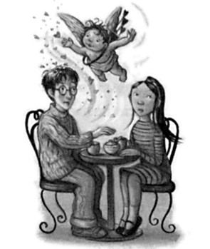
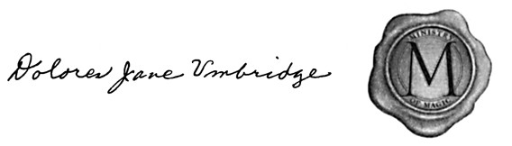
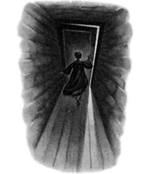
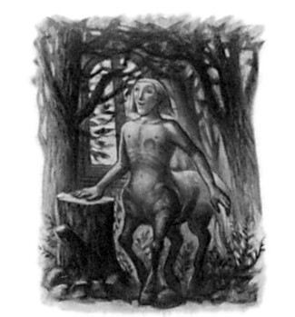
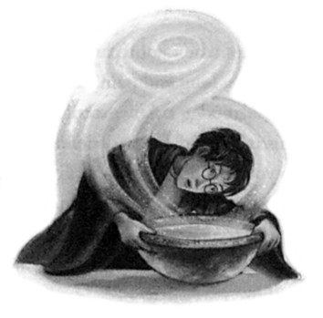
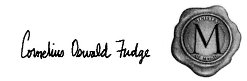

OCCLUMENCY
After a hurried breakfast they pulled on jackets and scarves against the chilly gray January morning. Harry had an unpleasant constricted sensation in his chest; he did not want to say good-bye to Sirius. He had a bad feeling about this parting; he did not know when they would next see each other and felt that it was incumbent upon him to say something to Sirius to stop him doing anything stupid — Harry was worried that Snape’s accusation of cowardice had stung Sirius so badly he might even now be planning some foolhardy trip beyond Grimmauld Place. Before he could think of what to say, however, Sirius had beckoned him to his side.
“I want you to take this,” he said quietly, thrusting a badly wrapped package roughly the size of a paperback book into Harry’s hands.
“What is it?” Harry asked.
“A way of letting me know if Snape’s giving you a hard time. No, don’t open it in here!” said Sirius, with a wary look at Mrs. Weasley, who was trying to persuade the twins to wear hand-knitted mittens. “I doubt Molly would approve — but I want you to use it if you need me, all right?”
“Okay,” said Harry, stowing the package away in the inside pocket of his jacket, but he knew he would never use whatever it was. It would not be he, Harry, who lured Sirius from his place of safety, no matter how foully Snape treated him in their forthcoming Occlumency classes.
“Let’s go, then,” said Sirius, clapping Harry on the shoulder and smiling grimly, and before Harry could say anything else, they were heading upstairs, stopping before the heavily chained and bolted front door, surrounded by Weasleys.
“Good-bye, Harry, take care,” said Mrs. Weasley, hugging him.
“See you Harry, and keep an eye out for snakes for me!” said Mr.
Weasley genially, shaking his hand.
“Right — yeah,” said Harry distractedly. It was his last chance to tell Sirius to be careful; he turned, looked into his godfather’s face and
523
CHAPTER TWENTY-FOUR
opened his mouth to speak, but before he could do so Sirius was giving him a brief, one-armed hug. He said gruffly, “Look after yourself, Harry,” and next moment Harry found himself being shunted out into the icy winter air, with Tonks (today heavily disguised as a tall, tweedy woman with iron-gray hair) chivvying him down the steps.
The door of number twelve slammed shut behind them. They followed Lupin down the front steps. As he reached the pavement, Harry looked around. Number twelve was shrinking rapidly as those on either side of it stretched sideways, squeezing it out of sight; one blink later, it had gone.
“Come on, the quicker we get on the bus the better,” said Tonks, and Harry thought there was nervousness in the glance she threw around the square. Lupin flung out his right arm.
BANG.
A violently purple, triple-decker bus had appeared out of thin air in front of them, narrowly avoiding the nearest lamppost, which jumped backward out of its way.
A thin, pimply, jug-eared youth in a purple uniform leapt down onto the pavement and said, “Welcome to the —”
“Yes, yes, we know, thank you,” said Tonks swiftly. “On, on, get on —
And she shoved Harry forward toward the steps, past the conductor, who goggled at Harry as he passed.
“ ’Ere — it’s ’Arry — !”
“If you shout his name I will curse you into oblivion,” muttered Tonks menacingly, now shunting Ginny and Hermione forward.
“I’ve always wanted to go on this thing,” said Ron happily, joining Harry on board and looking around.
It had been evening the last time Harry had traveled by Knight Bus and its three decks had been full of brass bedsteads. Now, in the early morning, it was crammed with an assortment of mismatched chairs
524
OCCLUMENCY
grouped haphazardly around windows. Some of these appeared to have fallen over when the bus stopped abruptly in Grimmauld Place; a few witches and wizards were still getting to their feet, grumbling, and somebody’s shopping bag had slid the length of the bus; an unpleasant mixture of frog spawn, cockroaches, and custard creams was scattered all over the floor.
“Looks like we’ll have to split up,” said Tonics briskly, looking around for empty chairs. “Fred, George, and Ginny, if you just take those seats at the back . . . Remus can stay with you. . . .”
She, Harry, Ron, and Hermione proceeded up to the very top deck, where there were two chairs at the very front of the bus and two at the back. Stan Shunpike, the conductor, followed Harry and Ron eagerly to the back. Heads turned as Harry passed and when he sat down, he saw all the faces flick back to the front again.
As Harry and Ron handed Stan eleven Sickles each, the bus set off again, swaying ominously. It rumbled around Grimmauld Square, weaving on and off the pavement, then, with another tremendous BANG, they were all flung backward; Ron’s chair toppled right over and Pigwidgeon, who had been on his lap, burst out of his cage and flew twittering wildly up to the front of the bus where he fluttered down upon Hermione’s shoulder instead. Harry, who had narrowly avoided falling by seizing a candle bracket, looked out of the window: they were now speeding down what appeared to be a motorway.
“Just outside Birmingham,” said Stan happily, answering Harry’s unasked question as Ron struggled up from the floor. “You keepin’
well, then, ’Arry? I seen your name in the paper loads over the summer, but it weren’t never nuffink very nice. . . . I said to Ern, I said, ‘ ’e didn’t seem like a nutter when we met ’im, just goes to show, dunnit?’ ”
He handed over their tickets and continued to gaze, enthralled, at Harry; apparently Stan did not care how nutty somebody was if they were famous enough to be in the paper. The Knight Bus swayed
525
CHAPTER TWENTY-FOUR
alarmingly, overtaking a line of cars on the inside. Looking toward the front of the bus Harry saw Hermione cover her eyes with her hands, Pigwidgeon still swaying happily on her shoulder.
BANG.
Chairs slid backward again as the Knight Bus jumped from the Birmingham motorway to a quiet country lane full of hairpin bends.
Hedgerows on either side of the road were leaping out of their way as they mounted the verges. From here they moved to a main street in the middle of a busy town, then to a viaduct surrounded by tall hills, then to a windswept road between high-rise flats, each time with a loud BANG.
“I’ve changed my mind,” muttered Ron, picking himself up from the floor for the sixth time, “I never want to ride on here again.”
“Listen, it’s ’Ogwarts stop after this,” said Stan brightly, swaying toward them. “That bossy woman up front ’oo got on with you, she’s given us a little tip to move you up the queue. We’re just gonna let Madam Marsh off first, though —” There was more retching from downstairs, followed by a horrible spattering sound. “She’s not feeling
’er best.
A few minutes later the Knight Bus screeched to a halt outside a small pub, which squeezed itself out of the way to avoid a collision.
They could hear Stan ushering the unfortunate Madam Marsh out of the bus and the relieved murmurings of her fellow passengers on the second deck. The bus moved on again, gathering speed, until —
BANG.
They were rolling through a snowy Hogsmeade. Harry caught a glimpse of the Hog’s Head down its side street, the severed boar’s head sign creaking in the wintry wind. Flecks of snow hit the large window at the front of the bus. At last they rolled to a halt outside the gates to Hogwarts.
Lupin and Tonks helped them off the bus with their luggage and then got off to say good-bye. Harry glanced up at the three decks of
526
OCCLUMENCY
the Knight Bus and saw all the passengers staring down at them, noses flat against the windows.
“You’ll be safe once you’re in the grounds,” said Tonks, casting a careful eye around at the deserted road. “Have a good term, okay?”
“Look after yourselves,” said Lupin, shaking hands all round and reaching Harry last. “And listen . . .” He lowered his voice while the rest of them exchanged last-minute good-byes with Tonks, “Harry, I know you don’t like Snape, but he is a superb Occlumens and we all — Sirius included — want you to learn to protect yourself, so work hard, all right?”
“Yeah, all right,” said Harry heavily, looking up into Lupin’s prematurely lined face. “See you, then . . .”
The six of them struggled up the slippery drive toward the castle dragging their trunks. Hermione was already talking about knitting a few elf hats before bedtime. Harry glanced back when they reached the oak front doors; the Knight Bus had already gone, and he half-wished, given what was coming the following day, that he was still on board.
Harry spent most of the next day dreading the evening. His morning Potions lesson did nothing to dispel his trepidation, as Snape was as unpleasant as ever, and Harry’s mood was further lowered by the fact that members of the D.A. were continually approaching him in the corridors between classes, asking hopefully whether there would be a meeting that night.
“I’ll let you know when the next one is,” Harry said over and over again, “but I can’t do it tonight, I’ve got to go to — er — Remedial Potions. . . .”
“You take Remedial Potions?” asked Zacharias Smith superciliously, having cornered Harry in the entrance hall after lunch. “Good Lord, you must be terrible, Snape doesn’t usually give extra lessons, does he?”
527
CHAPTER TWENTY-FOUR
As Smith strode away in an annoyingly buoyant fashion, Ron glared after him.
“Shall I jinx him? I can still get him from here,” he said, raising his wand and taking aim between Smith’s shoulder blades.
“Forget it,” said Harry dismally. “It’s what everyone’s going to think, isn’t it? That I’m really stup —”
“Hi, Harry,” said a voice behind him. He turned around and found Cho standing there.
“Oh,” said Harry as his stomach leapt uncomfortably. “Hi.”
“We’ll be in the library, Harry,” said Hermione firmly, and she seized Ron above the elbow and dragged him off toward the marble staircase.
“Had a good Christmas?” asked Cho.
“Yeah, not bad,” said Harry.
“Mine was pretty quiet,” said Cho. For some reason, she was looking rather embarrassed. “Erm . . . there’s another Hogsmeade trip next month, did you see the notice?”
“What? Oh no, I haven’t checked the notice board since I got back. . . .”
“Yes, it’s on Valentine’s Day. . . .”
“Right,” said Harry, wondering why she was telling him this.
“Wel , I suppose you want to — ?”
“Only if you do,” she said eagerly.
Harry stared. He had been about to say “I suppose you want to know when the next D.A. meeting is?” but her response did not seem to fit.
“I — er —” he said.
“Oh, it’s okay if you don’t,” she said, looking mortified. “Don’t worry. I-I’ll see you around.”
She walked away. Harry stood staring after her, his brain working frantically. Then something clunked into place.
528
OCCLUMENCY
“Cho! Hey — CHO!”
He ran after her, catching her halfway up the marble staircase.
“Er — d’you want to come into Hogsmeade with me on Valentine’s Day?”
“Oooh, yes!” she said, blushing crimson and beaming at him.
“Right . . . well . . . that’s settled then,” said Harry, and feeling that the day was not going to be a complete loss after all, he headed off to the library to pick up Ron and Hermione before their afternoon lessons, walking in a rather bouncy way himself.
By six o’clock that evening, however, even the glow of having successfully asked out Cho Chang was insufficient to lighten the ominous feelings that intensified with every step Harry took toward Snape’s office.
He paused outside the door when he reached it, wishing he were almost anywhere else, then, taking a deep breath, knocked, and entered.
It was a shadowy room lined with shelves bearing hundreds of glass jars in which floated slimy bits of animals and plants, suspended in variously colored potions. In a corner stood the cupboard full of ingredients that Snape had once accused Harry — not without reason — of robbing. Harry’s attention was drawn toward the desk, however, where a shallow stone basin engraved with runes and symbols lay in a pool of candlelight. Harry recognized it at once — Dumbledore’s Pensieve. Wondering what on earth it was doing here, he jumped when Snape’s cold voice came out of the corner.
“Shut the door behind you, Potter.”
Harry did as he was told with the horrible feeling that he was imprisoning himself as he did so. When he turned back to face the room Snape had moved into the light and was pointing silently at the chair opposite his desk. Harry sat down and so did Snape, his cold black eyes fixed unblinkingly upon Harry, dislike etched in every line of his face.
529
CHAPTER TWENTY-FOUR
“Well, Potter, you know why you are here,” he said. “The headmaster has asked me to teach you Occlumency. I can only hope that you prove more adept at it than Potions.”
“Right,” said Harry tersely.
“This may not be an ordinary class, Potter,” said Snape, his eyes narrowed malevolently, “but I am still your teacher and you will therefore call me ‘sir’ or ‘Professor’ at all times.”
“Yes . . . sir, ” said Harry.
“Now, Occlumency. As I told you back in your dear godfather’s kitchen, this branch of magic seals the mind against magical intrusion and influence.”
“And why does Professor Dumbledore think I need it, sir?” said Harry, looking directly into Snape’s dark, cold eyes and wondering whether he would answer.
Snape looked back at him for a moment and then said contemptuously, “Surely even you could have worked that out by now, Potter?
The Dark Lord is highly skilled at Legilimency —”
“What’s that? Sir?”
“It is the ability to extract feelings and memories from another person’s mind —”
“He can read minds?” said Harry quickly, his worst fears confirmed.
“You have no subtlety, Potter,” said Snape, his dark eyes glittering.
“You do not understand fine distinctions. It is one of the shortcom-ings that makes you such a lamentable potion-maker.”
Snape paused for a moment, apparently to savor the pleasure of insulting Harry, before continuing, “Only Muggles talk of ‘mind reading.’ The mind is not a book, to be opened at will and examined at leisure. Thoughts are not etched on the inside of skulls, to be perused by any invader. The mind is a complex and many-layered thing, Potter . . . or at least, most minds are. . . .” He smirked. “It is true, however, that those who have mastered Legilimency are able, un-
530
OCCLUMENCY
der certain conditions, to delve into the minds of their victims and to interpret their findings correctly. The Dark Lord, for instance, almost always knows when somebody is lying to him. Only those skilled at Occlumency are able to shut down those feelings and memories that contradict the lie, and so utter falsehoods in his presence without detection.”
Whatever Snape said, Legilimency sounded like mind reading to Harry and he did not like the sound of it at all.
“So he could know what we’re thinking right now? Sir?”
“The Dark Lord is at a considerable distance and the walls and grounds of Hogwarts are guarded by many ancient spells and charms to ensure the bodily and mental safety of those who dwell within them,” said Snape. “Time and space matter in magic, Potter. Eye contact is often essential to Legilimency.”
“Well then, why do I have to learn Occlumency?”
Snape eyed Harry, tracing his mouth with one long, thin finger as he did so.
“The usual rules do not seem to apply with you, Potter. The curse that failed to kill you seems to have forged some kind of connection between you and the Dark Lord. The evidence suggests that at times, when your mind is most relaxed and vulnerable — when you are asleep, for instance — you are sharing the Dark Lord’s thoughts and emotions. The headmaster thinks it inadvisable for this to continue.
He wishes me to teach you how to close your mind to the Dark Lord.”
Harry’s heart was pumping fast again. None of this added up.
“But why does Professor Dumbledore want to stop it?” he asked abruptly. “I don’t like it much, but it’s been useful, hasn’t it? I mean
. . . I saw that snake attack Mr. Weasley and if I hadn’t, Professor Dumbledore wouldn’t have been able to save him, would he? Sir?”
Snape stared at Harry for a few moments, still tracing his mouth
531
CHAPTER TWENTY-FOUR
with his finger. When he spoke again, it was slowly and deliberately, as though he weighed every word.
“It appears that the Dark Lord has been unaware of the connection between you and himself until very recently. Up till now it seems that you have been experiencing his emotions and sharing his thoughts without his being any the wiser. However, the vision you had shortly before Christmas —”
“The one with the snake and Mr. Weasley?”
“Do not interrupt me, Potter,” said Snape in a dangerous voice. “As I was saying . . . the vision you had shortly before Christmas represented such a powerful incursion upon the Dark Lord’s thoughts —”
“I saw inside the snake’s head, not his!”
“I thought I just told you not to interrupt me, Potter?”
But Harry did not care if Snape was angry; at last he seemed to be getting to the bottom of this business. He had moved forward in his chair so that, without realizing it, he was perched on the very edge, tense as though poised for flight.
“How come I saw through the snake’s eyes if it’s Voldemort’s thoughts I’m sharing?”
“Do not say the Dark Lord’s name!” spat Snape.
There was a nasty silence. They glared at each other across the Pensieve.
“Professor Dumbledore says his name,” said Harry quietly.
“Dumbledore is an extremely powerful wizard,” Snape muttered.
“While he may feel secure enough to use the name . . . the rest of us . . .” He rubbed his left forearm, apparently unconsciously, on the spot where Harry knew the Dark Mark was burned into his skin.
“I just wanted to know,” Harry began again, forcing his voice back to politeness, “why —”
“You seem to have visited the snake’s mind because that was where the Dark Lord was at that particular moment,” snarled Snape. “He
532
OCCLUMENCY
was possessing the snake at the time and so you dreamed you were inside it too. . . .”
“And Vol — he — realized I was there?”
“It seems so,” said Snape coolly.
“How do you know?” said Harry urgently. “Is this just Professor Dumbledore guessing, or — ?”
“I told you,” said Snape, rigid in his chair, his eyes slits, “to call me
‘sir.’ ”
“Yes, sir,” said Harry impatiently, “but how do you know — ?”
“It is enough that we know,” said Snape repressively. “The important point is that the Dark Lord is now aware that you are gaining access to his thoughts and feelings. He has also deduced that the process is likely to work in reverse; that is to say, he has realized that he might be able to access your thoughts and feelings in return —”
“And he might try and make me do things?” asked Harry. “Sir?” he added hurriedly.
“He might,” said Snape, sounding cold and unconcerned. “Which brings us back to Occlumency.”
Snape pulled out his wand from an inside pocket of his robes and Harry tensed in his chair, but Snape merely raised the wand to his temple and placed its tip into the greasy roots of his hair. When he withdrew it, some silvery substance came away, stretching from temple to wand like a thick gossamer strand, which broke as he pulled the wand away from it and fell gracefully into the Pensieve, where it swirled silvery white, neither gas nor liquid. Twice more Snape raised the wand to his temple and deposited the silvery substance into the stone basin, then, without offering any explanation of his behavior, he picked up the Pensieve carefully, removed it to a shelf out of their way and returned to face Harry with his wand held at the ready.
“Stand up and take out your wand, Potter.”
533
CHAPTER TWENTY-FOUR
Harry got to his feet feeling nervous. They faced each other with the desk between them.
“You may use your wand to attempt to disarm me, or defend yourself in any other way you can think of,” said Snape.
“And what are you going to do?” Harry asked, eyeing Snape’s wand apprehensively.
“I am about to attempt to break into your mind,” said Snape softly.
“We are going to see how well you resist. I have been told that you have already shown aptitude at resisting the Imperius Curse. . . . You will find that similar powers are needed for this. . . . Brace yourself, now. . . . Legilimens!”
Snape had struck before Harry was ready, before Harry had even begun to summon any force of resistance: the office swam in front of his eyes and vanished, image after image was racing through his mind like a flickering film so vivid it blinded him to his surroundings. . . .
He was five, watching Dudley riding a new red bicycle, and his heart was bursting with jealousy. . . . He was nine, and Ripper the bulldog was chasing him up a tree and the Dursleys were laughing below on the lawn. . . . He was sitting under the Sorting Hat, and it was telling him he would do well in Slytherin. . . . Hermione was lying in the hospital wing, her face covered with thick black hair. . . . A hundred dementors were closing in on him beside the dark lake. . . . Cho Chang was drawing nearer to him under the mistletoe. . . .
No, said a voice in Harry’s head, as the memory of Cho drew nearer, you’re not watching that, you’re not watching it, it’s private —
He felt a sharp pain in his knee. Snape’s office had come back into view and he realized that he had fallen to the floor; one of his knees had collided painfully with the leg of Snape’s desk. He looked up at Snape, who had lowered his wand and was rubbing his wrist. There was an angry weal there, like a scorch mark.
“Did you mean to produce a Stinging Hex?” asked Snape coolly.
“No,” said Harry bitterly, getting up from the floor.
534
OCCLUMENCY
“I thought not,” said Snape contemptuously. “You let me get in too far. You lost control.”
“Did you see everything I saw?” Harry asked, unsure whether he wanted to hear the answer.
“Flashes of it,” said Snape, his lip curling. “To whom did the dog belong?”
“My Aunt Marge,” Harry muttered, hating Snape.
“Well, for a first attempt that was not as poor as it might have been,” said Snape, raising his wand once more. “You managed to stop me eventually, though you wasted time and energy shouting. You must remain focused. Repel me with your brain and you will not need to resort to your wand.”
“I’m trying,” said Harry angrily, “but you’re not telling me how!”
“Manners, Potter,” said Snape dangerously. “Now, I want you to close your eyes.”
Harry threw him a filthy look before doing as he was told. He did not like the idea of standing there with his eyes shut while Snape faced him, carrying a wand.
“Clear your mind, Potter,” said Snape’s cold voice. “Let go of all emotion. . . .”
But Harry’s anger at Snape continued to pound through his veins like venom. Let go of his anger? He could as easily detach his legs. . . .
“You’re not doing it, Potter. . . . You will need more discipline than this. . . . Focus, now. . . .”
Harry tried to empty his mind, tried not to think, or remember, or feel. . . .
“Let’s go again . . . on the count of three . . . one — two —
three — Legilimens!”
A great black dragon was rearing in front of him. . . . His father and mother were waving at him out of an enchanted mirror. . . .
Cedric Diggory was lying on the ground with blank eyes staring at him. . . .
535
CHAPTER TWENTY-FOUR
“NOOOOOOO!”
He was on his knees again, his face buried in his hands, his brain aching as though someone had been trying to pull it from his skull.
“Get up!” said Snape sharply. “Get up! You are not trying, you are making no effort, you are allowing me access to memories you fear, handing me weapons!”
Harry stood up again, his heart thumping wildly as though he had really just seen Cedric dead in the graveyard. Snape looked paler than usual, and angrier, though not nearly as angry as Harry was.
“I — am — making — an — effort,” he said through clenched teeth.
“I told you to empty yourself of emotion!”
“Yeah? Well, I’m finding that hard at the moment,” Harry snarled.
“Then you will find yourself easy prey for the Dark Lord!” said Snape savagely. “Fools who wear their hearts proudly on their sleeves, who cannot control their emotions, who wallow in sad memories and allow themselves to be provoked this easily — weak people, in other words — they stand no chance against his powers! He will penetrate your mind with absurd ease, Potter!”
“I am not weak,” said Harry in a low voice, fury now pumping through him so that he thought he might attack Snape in a moment.
“Then prove it! Master yourself!” spat Snape. “Control your anger, discipline your mind! We shall try again! Get ready, now! Legilimens!”
He was watching Uncle Vernon hammering the letter box shut. . . .
A hundred dementors were drifting across the lake in the grounds toward him. . . . He was running along a windowless passage with Mr.
Weasley. . . . They were drawing nearer to the plain black door at the end of the corridor. . . . Harry expected to go through it . . . but Mr.
Weasley led him off to the left, down a flight of stone steps. . . .
“I KNOW! I KNOW!”
He was on all fours again on Snape’s office floor, his scar was prick-
536
OCCLUMENCY
ling unpleasantly, but the voice that had just issued from his mouth was triumphant. He pushed himself up again to find Snape staring at him, his wand raised. It looked as though, this time, Snape had lifted the spell before Harry had even tried to fight back.
“What happened then, Potter?” he asked, eyeing Harry intently.
“I saw — I remembered,” Harry panted. “I’ve just realized . . .”
“Realized what?” asked Snape sharply.
Harry did not answer at once; he was still savoring the moment of blinding realization as he rubbed his forehead. . . .
He had been dreaming about a windowless corridor ending in a locked door for months, without once realizing that it was a real place.
Now, seeing the memory again, he knew that all along he had been dreaming about the corridor down which he had run with Mr.
Weasley on the twelfth of August as they hurried to the courtrooms in the Ministry. It was the corridor leading to the Department of Mysteries, and Mr. Weasley had been there the night that he had been attacked by Voldemort’s snake. . . .
He looked up at Snape.
“What’s in the Department of Mysteries?”
“What did you say?” Snape asked quietly and Harry saw, with deep satisfaction, that Snape was unnerved.
“I said, what’s in the Department of Mysteries, sir?” Harry said.
“And why,” said Snape slowly, “would you ask such a thing?”
“Because,” said Harry, watching Snape closely for a reaction, “that corridor I’ve just seen — I’ve been dreaming about it for months —
I’ve just recognized it — it leads to the Department of Mysteries . . .
and I think Voldemort wants something from —”
“I have told you not to say the Dark Lord’s name!”
They glared at each other. Harry’s scar seared again, but he did not care. Snape looked agitated. When he spoke again he sounded as though he was trying to appear cool and unconcerned.
537
CHAPTER TWENTY-FOUR
“There are many things in the Department of Mysteries, Potter, few of which you would understand and none of which concern you, do I make myself plain?”
“Yes,” Harry said, still rubbing his prickling scar, which was becoming more painful.
“I want you back here same time on Wednesday, and we will continue work then.”
“Fine,” said Harry. He was desperate to get out of Snape’s office and find Ron and Hermione.
“You are to rid your mind of all emotion every night before sleep — empty it, make it blank and calm, you understand?”
“Yes,” said Harry, who was barely listening.
“And be warned, Potter . . . I shall know if you have not practiced . . .”
“Right,” Harry mumbled. He picked up his schoolbag, swung it over his shoulder, and hurried toward the office door. As he opened it he glanced back at Snape, who had his back to Harry and was scooping his own thoughts out of the Pensieve with the tip of his wand and replacing them carefully inside his own head. Harry left without another word, closing the door carefully behind him, his scar still throbbing painfully.
Harry found Ron and Hermione in the library, where they were working on Umbridge’s most recent ream of homework. Other students, nearly all of them fifth years, sat at lamp-lit tables nearby, noses close to books, quills scratching feverishly, while the sky outside the mullioned windows grew steadily blacker. The only other sound was the slight squeaking of one of Madam Pince’s shoes as the librarian prowled the aisles menacingly, breathing down the necks of those touching her precious books.
Harry felt shivery; his scar was still aching, he felt almost feverish.
When he sat down opposite Ron and Hermione he caught sight of
538
OCCLUMENCY
himself in the window opposite. He was very white, and his scar seemed to be showing up more clearly than usual.
“How did it go?” Hermione whispered, and then, looking concerned, “Are you all right, Harry?”
“Yeah . . . fine . . . I dunno,” said Harry impatiently, wincing as pain shot through his scar again. “Listen . . . I’ve just realized something. . . .”
And he told them what he had just seen and deduced.
“So . . . so, are you saying . . .” whispered Ron, as Madam Pince swept past, squeaking slightly, “that the weapon — the thing You-Know-Who’s after — is in the Ministry of Magic?”
“In the Department of Mysteries, it’s got to be,” Harry whispered.
“I saw that door when your dad took me down to the courtrooms for my hearing and it’s definitely the same one he was guarding when the snake bit him.”
Hermione let out a long, slow sigh. “Of course,” she breathed.
“Of course what?” said Ron rather impatiently.
“Ron, think about it. . . . Sturgis Podmore was trying to get through a door at the Ministry of Magic. . . . It must have been that one, it’s too much of a coincidence!”
“How come Sturgis was trying to break in when he’s on our side?”
said Ron.
“Well, I don’t know,” Hermione admitted. “That is a bit odd. . . .”
“So what’s in the Department of Mysteries?” Harry asked Ron.
“Has your dad ever mentioned anything about it?”
“I know they call the people who work in there ‘Unspeakables,’ ”
said Ron, frowning. “Because no one really seems to know what they do in there. . . . Weird place to have a weapon . . .”
“It’s not weird at all, it makes perfect sense,” said Hermione. “It will be something top secret that the Ministry has been developing, I expect. . . . Harry, are you sure you’re all right?”
539
CHAPTER TWENTY-FOUR
For Harry had just run both his hands hard over his forehead as though trying to iron it.
“Yeah . . . fine . . .” he said, lowering his hands, which were trembling. “I just feel a bit . . . I don’t like Occlumency much. . . .”
“I expect anyone would feel shaky if they’d had their mind attacked over and over again,” said Hermione sympathetically. “Look, let’s get back to the common room, we’ll be a bit more comfortable there. . . .”
But the common room was packed and full of shrieks of laughter and excitement; Fred and George were demonstrating their latest bit of joke shop merchandise.
“Headless Hats!” shouted George, as Fred waved a pointed hat decorated with a fluffy pink feather at the watching students. “Two Galleons each — watch Fred, now!”
Fred swept the hat onto his head, beaming. For a second he merely looked rather stupid, then both hat and head vanished.
Several girls screamed, but everyone else was roaring with laughter.
“And off again!” shouted George, and Fred’s hand groped for a moment in what seemed to be thin air over his shoulder; then his head reappeared as he swept the pink-feathered hat from it again.
“How do those hats work, then?” said Hermione, distracted from her homework and watching Fred and George. “I mean, obviously it’s some kind of Invisibility Spell, but it’s rather clever to have extended the field of invisibility beyond the boundaries of the charmed object.
. . . I’d imagine the charm wouldn’t have a very long life though. . . .”
Harry did not answer; he was still feeling ill.
“I’m going to have to do this tomorrow,” he muttered, pushing the books he had just taken out of his bag back inside it.
“Well, write it in your homework planner then!” said Hermione encouragingly. “So you don’t forget!”
Harry and Ron exchanged looks as he reached into his bag, withdrew the planner and opened it tentatively.
540
OCCLUMENCY
“Don’t leave it till later, you big second-rater!” chided the book as Harry scribbled down Umbridge’s homework. Hermione beamed at it.
“I think I’ll go to bed,” said Harry, stuffing the homework planner back into his bag and making a mental note to drop it in the fire the first opportunity he got.
He walked across the common room, dodging George, who tried to put a Headless Hat on him, and reached the peace and cool of the stone staircase to the boys’ dormitories. He was feeling sick again, just as he had the night he had had the vision of the snake, but thought that if he could just lie down for a while he would be all right.
He opened the door of his dormitory and was one step inside it when he experienced pain so severe he thought that someone must have sliced into the top of his head. He did not know where he was, whether he was standing or lying down, he did not even know his own name. . . .
Maniacal laughter was ringing in his ears. . . . He was happier than he had been in a very long time. . . . Jubilant, ecstatic, triumphant . . .
A wonderful, wonderful thing had happened. . . .
“Harry? HARRY!”
Someone had hit him around the face. The insane laughter was punctuated with a cry of pain. The happiness was draining out of him, but the laughter continued. . . .
He opened his eyes and as he did so, he became aware that the wild laughter was coming out of his own mouth. The moment he realized this, it died away; Harry lay panting on the floor, staring up at the ceiling, the scar on his forehead throbbing horribly. Ron was bending over him, looking very worried.
“What happened?” he said.
“I . . . dunno . . .” Harry gasped, sitting up again. “He’s really happy . . . really happy . . .”
“You-Know-Who is?”
541
CHAPTER TWENTY-FOUR
“Something good’s happened,” mumbled Harry. He was shaking as badly as he had done after seeing the snake attack Mr. Weasley and felt very sick. “Something he’s been hoping for.”
The words came, just as they had back in the Gryffindor changing room, as though a stranger was speaking them through Harry’s mouth, yet he knew they were true. He took deep breaths, willing himself not to vomit all over Ron. He was very glad that Dean and Seamus were not here to watch this time.
“Hermione told me to come and check on you,” said Ron in a low voice, helping Harry to his feet. “She says your defenses will be low at the moment, after Snape’s been fiddling around with your mind. . . .
Still, I suppose it’ll help in the long run, won’t it?”
He looked doubtfully at Harry as he helped him toward bed. Harry nodded without any conviction and slumped back on his pillows, aching all over from having fallen to the floor so often that evening, his scar still prickling painfully. He could not help feeling that his first foray into Occlumency had weakened his mind’s resistance rather than strengthening it, and he wondered, with a feeling of great trepidation, what had happened to make Lord Voldemort the happiest he had been in fourteen years.
542

C H A P T E R T W E N T Y - F I V E
THE BEETLE AT BAY
arry’s question was answered the very next morning. When H Hermione’s Daily Prophet arrived she smoothed it out, gazed for a moment at the front page, and then gave a yelp that caused everyone in the vicinity to stare at her.
“What?” said Harry and Ron together.
For an answer she spread the newspaper on the table in front of them and pointed at ten black-and-white photographs that filled the whole of the front page, nine showing wizards’ faces and the tenth, a witch’s. Some of the people in the photographs were silently jeering; others were tapping their fingers on the frame of their pictures, looking insolent. Each picture was captioned with a name and the crime for which the person had been sent to Azkaban.
Antonin Dolohov, read the legend beneath a wizard with a long, pale, twisted face who was sneering up at Harry, convicted of the brutal murders of Gideon and Fabian Prewett.
Augustus Rookwood, said the caption beneath a pockmarked man with greasy hair who was leaning against the edge of his picture,
543
CHAPTER TWENTY-FIVE
looking bored, convicted of leaking Ministry of Magic Secrets to He-Who-Must-Not-Be-Named.
But Harry’s eyes were drawn to the picture of the witch. Her face had leapt out at him the moment he had seen the page. She had long, dark hair that looked unkempt and straggly in the picture, though he had seen it sleek, thick, and shining. She glared up at him through heavily lidded eyes, an arrogant, disdainful smile playing around her thin mouth. Like Sirius, she retained vestiges of great good looks, but something — perhaps Azkaban — had taken most of her beauty.
Bellatrix Lestrange, convicted of the torture and permanent incapacitation of Frank and Alice Longbottom.
Hermione nudged Harry and pointed at the headline over the pictures, which Harry, concentrating on Bellatrix, had not yet read.
MASS BREAKOUT FROM AZKABAN
MINISTRY FEARS BLACK IS “RALLYING POINT”
FOR OLD DEATH EATERS
“Black?” said Harry loudly. “Not — ?”
“Shhh!” whispered Hermione desperately. “Not so loud — just read it!”
The Ministry of Magic announced late last night that there has been a mass breakout from Azkaban.
Speaking to reporters in his private office, Cornelius Fudge, Minister of Magic, confirmed that ten high-security prisoners escaped in the early hours of yesterday evening, and that he has already informed the Muggle Prime Minister of the dangerous nature of these individuals.
“We find ourselves, most unfortunately, in the same position we were two and a half years ago when
544
THE BEETLE AT BAY
the murderer Sirius Black escaped,” said Fudge last night. “Nor do we think the two breakouts are unrelated. An escape of this magnitude suggests outside help, and we must remember that Black, as the first person ever to break out of Azkaban, would be ideally placed to help others follow in his footsteps. We think it likely that these individuals, who include Black’s cousin, Bellatrix Lestrange, have rallied around Black as their leader. We are, however, doing all we can to round up the criminals and beg the magical community to remain alert and cautious. On no account should any of these individuals be approached.”
“There you are, Harry,” said Ron, looking awestruck. “That’s why he was happy last night. . . .”
“I don’t believe this,” snarled Harry, “Fudge is blaming the breakout on Sirius?”
“What other options does he have?” said Hermione bitterly. “He can hardly say, ‘Sorry everyone, Dumbledore warned me this might happen, the Azkaban guards have joined Lord Voldemort’ — stop whimpering, Ron — ‘and now Voldemort’s worst supporters have broken out too.’ I mean, he’s spent a good six months telling everyone you and Dumbledore are liars, hasn’t he?”
Hermione ripped open the newspaper and began to read the report inside while Harry looked around the Great Hall. He could not understand why his fellow students were not looking scared or at least discussing the terrible piece of news on the front page, but very few of them took the newspaper every day like Hermione. There they all were, talking about homework and Quidditch and who knew what other rubbish, and outside these walls ten more Death Eaters had swollen Voldemort’s ranks. . . .
He glanced up at the staff table. It was a different story here:
545
CHAPTER TWENTY-FIVE
Dumbledore and Professor McGonagall were deep in conversation, both looking extremely grave. Professor Sprout had the Prophet propped against a bottle of ketchup and was reading the front page with such concentration that she was not noticing the gentle drip of egg yolk falling into her lap from her stationary spoon. Meanwhile, at the far end of the table, Professor Umbridge was tucking into a bowl of porridge. For once her pouchy toad’s eyes were not sweeping the Great Hall looking for misbehaving students. She scowled as she gulped down her food and every now and then she shot a malevolent glance up the table to where Dumbledore and McGonagall were talking so intently.
“Oh my —” said Hermione wonderingly, still staring at the newspaper.
“What now?” said Harry quickly; he was feeling jumpy.
“It’s . . . horrible, ” said Hermione, looking shaken. She folded back page ten of the newspaper and handed it back to Harry and Ron.
TRAGIC DEMISE OF
MINISTRY OF MAGIC WORKER
St. Mungo’s Hospital promised a full inquiry last night after Ministry of Magic worker Broderick Bode, 49, was discovered dead in his bed, strangled by a potted-plant. Healers called to the scene were unable to revive Mr. Bode, who had been injured in a workplace accident some weeks prior to his death.
Healer Miriam Strout, who was in charge of Mr.
Bode’s ward at the time of the incident, has been suspended on full pay and was unavailable for comment yesterday, but a spokeswizard for the hospital said in a statement, “St. Mungo’s deeply regrets the death of Mr. Bode, whose health was improving steadily prior to this tragic accident.
546
THE BEETLE AT BAY
“We have strict guidelines on the decorations permitted on our wards but it appears that Healer Strout, busy over the Christmas period, overlooked the dangers of the plant on Mr. Bode’s bedside table. As his speech and mobility improved, Healer Strout encouraged Mr. Bode to look after the plant himself, unaware that it was not an innocent Flitterbloom, but a cutting of Devil’s Snare, which, when touched by the convalescent Mr. Bode, throttled him instantly.
“St. Mungo’s is as yet unable to account for the presence of the plant on the ward and asks any witch or wizard with information to come forward.”
“Bode . . .” said Ron. “Bode. It rings a bell. . . .”
“We saw him,” Hermione whispered. “In St. Mungo’s, remember?
He was in the bed opposite Lockhart’s, just lying there, staring at the ceiling. And we saw the Devil’s Snare arrive. She — the Healer —
said it was a Christmas present. . . .”
Harry looked back at the story. A feeling of horror was rising like bile in his throat.
“How come we didn’t recognize Devil’s Snare . . . ? We’ve seen it before . . . we could’ve stopped this from happening . . .”
“Who expects Devil’s Snare to turn up in a hospital disguised as a potted plant?” said Ron sharply. “It’s not our fault, whoever sent it to the bloke is to blame! They must be a real prat, why didn’t they check what they were buying?”
“Oh come on, Ron!” said Hermione shakily, “I don’t think anyone could put Devil’s Snare in a pot and not realize it tries to kill whoever touches it? This — this was murder. . . . A clever murder, as well. . . .
If the plant was sent anonymously, how’s anyone ever going to find out who did it?”
Harry was not thinking about Devil’s Snare. He was remembering
547
CHAPTER TWENTY-FIVE
taking the lift down to the ninth level of the Ministry on the day of his hearing, and the sallow-faced man who had got in on the Atrium level.
“I met Bode,” he said slowly. “I saw him at the Ministry with your dad . . .”
Ron’s mouth fell open.
“I’ve heard Dad talk about him at home! He was an Unspeakable — he worked in the Department of Mysteries!”
They looked at one another for a moment, then Hermione pulled the newspaper back toward her, closed it, glared for a moment at the pictures of the ten escaped Death Eaters on the front, then leapt to her feet.
“Where are you going?” said Ron, startled.
“To send a letter,” said Hermione, swinging her bag onto her shoulder. “It . . . well, I don’t know whether . . . but it’s worth trying
. . . and I’m the only one who can . . .”
“I hate it when she does that,” grumbled Ron as he and Harry got up from the table and made their own, slower way out of the Great Hall. “Would it kill her to tell us what she’s up to for once? It’d take her about ten more seconds — hey, Hagrid!”
Hagrid was standing beside the doors into the entrance hall, waiting for a crowd of Ravenclaws to pass. He was still as heavily bruised as he had been on the day he had come back from his mission to the giants and there was a new cut right across the bridge of his nose.
“All righ’, you two?” he said, trying to muster a smile but managing only a kind of pained grimace.
“Are you okay, Hagrid?” asked Harry, following him as he lumbered after the Ravenclaws.
“Fine, fine,” said Hagrid with a feeble assumption of airiness; he waved a hand and narrowly missed concussing a frightened-looking Professor Vector, who was passing. “Jus’ busy, yeh know, usual stuff —
548
THE BEETLE AT BAY
lessons ter prepare — couple o’ salamanders got scale rot — an’ I’m on probation,” he mumbled.
“You’re on probation?” said Ron very loudly, so that many students passing looked around curiously. “Sorry — I mean — you’re on probation?” he whispered.
“Yeah,” said Hagrid. “ ’S’no more’n I expected, ter tell yeh the truth. Yeh migh’ not’ve picked up on it, bu’ that inspection didn’ go too well, yeh know . . . anyway,” he sighed deeply. “Bes’ go an rub a bit more chili powder on them salamanders or their tails’ll be hangin’
off ’em next. See yeh, Harry . . . Ron . . .”
He trudged away, out the front doors and down the stone steps into the damp grounds. Harry watched him go, wondering how much more bad news he could stand.
The fact that Hagrid was now on probation became common knowledge within the school over the next few days, but to Harry’s indignation, hardly anybody appeared to be upset about it; indeed, some people, Draco Malfoy prominent among them, seemed positively gleeful. As for the freakish death of an obscure Department of Mysteries employee in St. Mungo’s, Harry, Ron, and Hermione seemed to be the only people who knew or cared. There was only one topic of conversation in the corridors now: the ten escaped Death Eaters, whose story had finally filtered through the school from those few people who read the newspapers. Rumors were flying that some of the convicts had been spotted in Hogsmeade, that they were supposed to be hiding out in the Shrieking Shack and that they were going to break into Hogwarts, just as Sirius Black had done.
Those who came from Wizarding families had grown up hearing the names of these Death Eaters spoken with almost as much fear as Voldemort’s; the crimes they had committed during the days of Voldemort’s reign of terror were legendary. There were relatives of
549
CHAPTER TWENTY-FIVE
their victims among the Hogwarts students, who now found themselves the unwilling objects of a gruesome sort of reflected fame as they walked the corridors: Susan Bones, who had an uncle, aunt, and cousins who had all died at the hands of one of the ten, said miserably during Herbology that she now had a good idea what it felt like to be Harry.
“And I don’t know how you stand it, it’s horrible,” she said bluntly, dumping far too much dragon manure on her tray of Screechsnap seedlings, causing them to wriggle and squeak in discomfort.
It was true that Harry was the subject of much renewed muttering and pointing in the corridors these days, yet he thought he detected a slight difference in the tone of the whisperers’ voices. They sounded curious rather than hostile now, and once or twice he was sure he overheard snatches of conversation that suggested that the speakers were not satisfied with the Prophet’s version of how and why ten Death Eaters had managed to break out of Azkaban fortress. In their confu-sion and fear, these doubters now seemed to be turning to the only other explanation available to them, the one that Harry and Dumbledore had been expounding since the previous year.
It was not only the students’ mood that had changed. It was now quite common to come across two or three teachers conversing in low, urgent whispers in the corridors, breaking off their conversations the moment they saw students approaching.
“They obviously can’t talk freely in the staffroom anymore,” said Hermione in a low voice, as she, Harry, and Ron passed Professors McGonagall, Flitwick, and Sprout huddled together outside the Charms classroom one day. “Not with Umbridge there.”
“Reckon they know anything new?” said Ron, gazing back over his shoulder at the three teachers.
“If they do, we’re not going to hear about it, are we?” said Harry angrily. “Not after Decree . . . What number are we on now?”
550

THE BEETLE AT BAY
For new signs had appeared on the house notice boards the morning after news of the Azkaban breakout:
— by order of —
The High Inquisitor of Hogwarts
Teachers are hereby banned from giving students any information that is not strictly related to the subjects they are paid to teach.
The above is in accordance with
Educational Decree Number Twenty-six.
Signed:
high inquisitor
This latest decree had been the subject of a great number of jokes among the students. Lee Jordan had pointed out to Umbridge that by the terms of the new rule she was not allowed to tell Fred and George off for playing Exploding Snap in the back of the class.
“Exploding Snap’s got nothing to do with Defense Against the Dark Arts, Professor! That’s not information relating to your subject!”
When Harry next saw Lee, the back of his hand was bleeding rather badly. Harry recommended essence of murtlap.
Harry had thought that the breakout from Azkaban might have humbled Umbridge a little, that she might have been abashed at the catastrophe that had occurred right under her beloved Fudge’s nose. It seemed, however, to have only intensified her furious desire to bring every aspect of life at Hogwarts under her personal control. She
551
CHAPTER TWENTY-FIVE
seemed determined at the very least to achieve a sacking before long, and the only question was whether it would be Professor Trelawney or Hagrid who went first.
Every single Divination and Care of Magical Creatures lesson was now conducted in the presence of Umbridge and her clipboard. She lurked by the fire in the heavily perfumed tower room, interrupting Professor Trelawney’s increasingly hysterical talks with difficult questions about Ornithomancy and Heptomology, insisting that she predict students’ answers before they gave them and demanding that she demonstrate her skill at the crystal ball, the tea leaves, and the rune stones in turn. Harry thought that Professor Trelawney might soon crack under the strain; several times he passed her in the corridors (in itself a very unusual occurrence as she generally remained in her tower room), muttering wildly to herself, wringing her hands, and shooting terrified glances over her shoulder, all the time giving off a powerful smell of cooking sherry. If he had not been so worried about Hagrid, he would have felt sorry for her — but if one of them was to be ousted out of a job, there could be only one choice for Harry as to who should remain.
Unfortunately, Harry could not see that Hagrid was putting up a better show than Trelawney. Though he seemed to be following Hermione’s advice and had shown them nothing more frightening than a crup, a creature indistinguishable from a Jack Russell terrier except for its forked tail, since before Christmas, he also seemed to have lost his nerve. He was oddly distracted and jumpy in lessons, losing the thread of what he was saying while talking to the class, answering questions wrongly and glancing anxiously at Umbridge all the time.
He was also more distant with Harry, Ron, and Hermione than he had ever been before, expressly forbidding them to visit him after dark.
“If she catches yeh, it’ll be all of our necks on the line,” he told them flatly, and with no desire to do anything that jeopardized his job further, they abstained from walking down to his hut in the evenings.
552
THE BEETLE AT BAY
It seemed to Harry that Umbridge was steadily depriving him of everything that made his life at Hogwarts worth living: visits to Hagrid’s house, letters from Sirius, his Firebolt, and Quidditch. He took his revenge the only way he had: redoubling his efforts for the D.A.
Harry was pleased to see that all of them, even Zacharias Smith, had been spurred to work harder than ever by the news that ten more Death Eaters were now on the loose, but in nobody was this improvement more pronounced than in Nevil e. The news of his parents’ attacker’s escape had wrought a strange and even slightly alarming change in him. He had not once mentioned his meeting with Harry, Ron, and Hermione on the closed ward in St. Mungo’s, and taking their lead from him, they had kept quiet about it too. Nor had he said anything on the subject of Bellatrix and her fellow torturers’ escape; in fact, he barely spoke during D.A. meetings anymore, but worked relentlessly on every new jinx and countercurse Harry taught them, his plump face screwed up in concentration, apparently indifferent to injuries or accidents, working harder than anyone else in the room. He was improving so fast it was quite unnerving and when Harry taught them the Shield Charm, a means of deflecting minor jinxes so that they rebounded upon the attacker, only Hermione mastered the charm faster than Neville.
In fact Harry would have given a great deal to be making as much progress at Occlumency as Neville was making during D.A. meetings.
Harry’s sessions with Snape, which had started badly enough, were not improving; on the contrary, Harry felt he was getting worse with every lesson.
Before he had started studying Occlumency, his scar had prickled occasionally, usually during the night, or else following one of those strange flashes of Voldemort’s thoughts or moods that he experienced every now and then. Nowadays, however, his scar hardly ever stopped prickling, and he often felt lurches of annoyance or cheerfulness that were unrelated to what was happening to him at the time, which were
553
CHAPTER TWENTY-FIVE
always accompanied by a particularly painful twinge from his scar. He had the horrible impression that he was slowly turning into a kind of aerial that was tuned in to tiny fluctuations in Voldemort’s mood, and he was sure he could date this increased sensitivity firmly from his first Occlumency lesson with Snape. What was more, he was now dreaming about walking down the corridor toward the entrance to the Department of Mysteries almost every night, dreams that always cul-minated in him standing longingly in front of the plain black door.
“Maybe it’s a bit like an illness,” said Hermione, looking concerned when Harry confided in her and Ron. “A fever or something. It has to get worse before it gets better.”
“It’s lessons with Snape that are making it worse,” said Harry flatly.
“I’m getting sick of my scar hurting, and I’m getting bored walking down that corridor every night.” He rubbed his forehead angrily. “I just wish the door would open, I’m sick of standing staring at it —”
“That’s not funny,” said Hermione sharply. “Dumbledore doesn’t want you to have dreams about that corridor at all, or he wouldn’t have asked Snape to teach you Occlumency. You’re just going to have to work a bit harder in your lessons.”
“I am working!” said Harry, nettled. “You try it sometime, Snape trying to get inside your head, it’s not a bundle of laughs, you know!”
“Maybe . . .” said Ron slowly.
“Maybe what?” said Hermione rather snappishly.
“Maybe it’s not Harry’s fault he can’t close his mind,” said Ron darkly.
“What do you mean?” said Hermione.
“Well, maybe Snape isn’t really trying to help Harry. . . .”
Harry and Hermione stared at him. Ron looked darkly and mean-ingfully from one to the other.
“Maybe,” he said again in a lower voice, “he’s actually trying to open Harry’s mind a bit wider . . . make it easier for You-Know —”
“Shut up, Ron,” said Hermione angrily. “How many times have
554
THE BEETLE AT BAY
you suspected Snape, and when have you ever been right? Dumbledore trusts him, he works for the Order, that ought to be enough.”
“He used to be a Death Eater,” said Ron stubbornly. “And we’ve never seen proof that he really swapped sides. . . .”
“Dumbledore trusts him,” Hermione repeated. “And if we can’t trust Dumbledore, we can’t trust anyone.”
With so much to worry about and so much to do — startling amounts of homework that frequently kept the fifth years working until past midnight, secret D.A. meetings, and regular classes with Snape — January seemed to be passing alarmingly fast. Before Harry knew it, February had arrived, bringing with it wetter and warmer weather and the prospect of the second Hogsmeade visit of the year.
Harry had had very little time to spare on conversations with Cho since they had agreed to visit the village together, but suddenly found himself facing a Valentine’s Day spent entirely in her company.
On the morning of the fourteenth he dressed particularly carefully.
He and Ron arrived at breakfast just in time for the arrival of the post owls. Hedwig was not there — not that he had expected her — but Hermione was tugging a letter from the beak of an unfamiliar brown owl as they sat down.
“And about time! If it hadn’t come today . . .” she said eagerly, tearing open the envelope and pulling out a small piece of parchment.
Her eyes sped from left to right as she read through the message and a grimly pleased expression spread across her face.
“Listen, Harry,” she said, looking up at him. “This is really important. . . . Do you think you could meet me in the Three Broomsticks around midday?”
“Well . . . I dunno,” said Harry dubiously. “Cho might be expecting me to spend the whole day with her. We never said what we were going to do.”
555
CHAPTER TWENTY-FIVE
“Well, bring her along if you must,” said Hermione urgently. “But will you come?”
“Well . . . all right, but why?”
“I haven’t got time to tell you now, I’ve got to answer this quickly —”
And she hurried out of the Great Hall, the letter clutched in one hand and a piece of uneaten toast in the other.
“Are you coming?” Harry asked Ron, but he shook his head, looking glum.
“I can’t come into Hogsmeade at all, Angelina wants a full day’s training. Like it’s going to help — we’re the worst team I’ve ever seen.
You should see Sloper and Kirke, they’re pathetic, even worse than I am.” He heaved a great sigh. “I dunno why Angelina won’t just let me resign. . . .”
“It’s because you’re good when you’re on form, that’s why,” said Harry irritably.
He found it very hard to be sympathetic to Ron’s plight when he himself would have given almost anything to be playing in the forthcoming match against Hufflepuff. Ron seemed to notice Harry’s tone, because he did not mention Quidditch again during breakfast, and there was a slight frostiness in the way they said good-bye to each other shortly afterward. Ron departed for the Quidditch pitch and Harry, after attempting to flatten his hair while staring at his reflection in the back of a teaspoon, proceeded alone to the entrance hall to meet Cho, feeling very apprehensive and wondering what on earth they were going to talk about.
She was waiting for him a little to the side of the oak front doors, looking very pretty with her hair tied back in a long ponytail. Harry’s feet seemed to be too big for his body as he walked toward her, and he was suddenly horribly aware of his arms and how stupid they looked swinging at his sides.
556
THE BEETLE AT BAY
“Hi,” said Cho slightly breathlessly.
“Hi,” said Harry.
They stared at each other for a moment, then Harry said, “Well —
er — shall we go, then?”
“Oh — yes . . .”
They joined the queue of people being signed out by Filch, occasionally catching each other’s eye and grinning shiftily, but not talking to each other. Harry was relieved when they reached the fresh air, finding it easier to walk along in silence than just stand there looking awkward. It was a fresh, breezy sort of day and as they passed the Quidditch stadium, Harry glimpsed Ron and Ginny skimming over the stands and felt a horrible pang that he was not up there with them. . . .
“You really miss it, don’t you?” said Cho.
He looked around and saw her watching him.
“Yeah,” sighed Harry. “I do.”
“Remember the first time we played against each other, in the third year?” she asked him.
“Yeah,” said Harry, grinning. “You kept blocking me.”
“And Wood told you not to be a gentleman and knock me off my broom if you had to,” said Cho, smiling reminiscently. “I heard he got taken on by Pride of Portree, is that right?”
“Nah, it was Puddlemere United, I saw him at the World Cup last year.”
“Oh, I saw you there too, remember? We were on the same camp-site. It was really good, wasn’t it?”
The subject of the Quidditch World Cup carried them all the way down the drive and out through the gates. Harry could hardly believe how easy it was to talk to her, no more difficult, in fact, than talking to Ron and Hermione, and he was just starting to feel confident and cheerful when a large gang of Slytherin girls passed them, including Pansy Parkinson.
557
CHAPTER TWENTY-FIVE
“Potter and Chang!” screeched Pansy to a chorus of snide giggles.
“Urgh, Chang, I don’t think much of your taste. . . . At least Diggory was good-looking!”
They sped up, talking and shrieking in a pointed fashion with many exaggerated glances back at Harry and Cho, leaving an embarrassed silence in their wake. Harry could think of nothing else to say about Quidditch, and Cho, slightly flushed, was watching her feet.
“So . . . where d’you want to go?” Harry asked as they entered Hogsmeade. The High Street was full of students ambling up and down, peering into the shop windows and messing about together on the pavements.
“Oh . . . I don’t mind,” said Cho, shrugging. “Um . . . shall we just have a look in the shops or something?”
They wandered toward Dervish and Banges. A large poster had been stuck up in the window and a few Hogsmeaders were looking at it. They moved aside when Harry and Cho approached and Harry found himself staring once more at the ten pictures of the escaped Death Eaters. The poster (“By Order of the Ministry of Magic”) offered a thousand-Galleon reward to any witch or wizard with information relating to the recapture of any of the convicts pictured.
“It’s funny, isn’t it,” said Cho in a low voice, also gazing up at the pictures of the Death Eaters. “Remember when that Sirius Black escaped, and there were dementors all over Hogsmeade looking for him? And now ten Death Eaters are on the loose and there aren’t dementors anywhere. . . .”
“Yeah,” said Harry, tearing his eyes away from Bellatrix Lestrange’s face to glance up and down the High Street. “Yeah, it is weird. . . .”
He was not sorry that there were no dementors nearby, but now he came to think of it, their absence was highly significant. They had not only let the Death Eaters escape, they were not bothering to look for them. . . . It looked as though they really were outside Ministry control now.
558
THE BEETLE AT BAY
The ten escaped Death Eaters were staring out of every shop window he and Cho passed. It started to rain as they passed Scrivenshaft’s; cold, heavy drops of water kept hitting Harry’s face and the back of his neck.
“Um . . . d’you want to get a coffee?” said Cho tentatively, as the rain began to fall more heavily.
“Yeah, all right,” said Harry, looking around. “Where — ?”
“Oh, there’s a really nice place just up here, haven’t you ever been to Madam Puddifoot’s?” she said brightly, and she led him up a side road and into a small tea shop that Harry had never noticed before. It was a cramped, steamy little place where everything seemed to have been decorated with frills or bows. Harry was reminded unpleasantly of Umbridge’s office.
“Cute, isn’t it?” said Cho happily.
“Er . . . yeah,” said Harry untruthfully.
“Look, she’s decorated it for Valentine’s Day!” said Cho, indicating a number of golden cherubs that were hovering over each of the small, circular tables, occasionally throwing pink confetti over the occupants.
“Aaah . . .”
They sat down at the last remaining table, which was situated in the steamy window. Roger Davies, the Ravenclaw Quidditch Captain, was sitting about a foot and a half away with a pretty blonde girl. They were holding hands. The sight made Harry feel uncomfortable, particularly when, looking around the tea shop, he saw that it was full of nothing but couples, all of them holding hands. Perhaps Cho would expect him to hold her hand.
“What can I get you, m’dears?” said Madam Puddifoot, a very stout woman with a shiny black bun, squeezing between their table and Roger Davies’s with great difficulty.
“Two coffees, please,” said Cho.
In the time it took for their coffees to arrive, Roger Davies and his girlfriend started kissing over their sugar bowl. Harry wished they wouldn’t; he felt that Davies was setting a standard with which Cho
559
CHAPTER TWENTY-FIVE
would soon expect him to compete. He felt his face growing hot and tried staring out of the window, but it was so steamed up he could not see the street outside. To postpone the moment when he had to look at Cho he stared up at the ceiling as though examining the paintwork and received a handful of confetti in the face from their hovering cherub.
After a few more painful minutes Cho mentioned Umbridge; Harry seized on the subject with relief and they passed a few happy moments abusing her, but the subject had already been so thoroughly canvassed during D.A. meetings it did not last very long. Silence fell again. Harry was very conscious of the slurping noises coming from the table next door and cast wildly around for something else to say.
“Er . . . listen, d’you want to come with me to the Three Broomsticks at lunchtime? I’m meeting Hermione Granger there.”
Cho raised her eyebrows.
“You’re meeting Hermione Granger? Today?”
“Yeah. Well, she asked me to, so I thought I would. D’you want to come with me? She said it wouldn’t matter if you did.”
“Oh . . . well . . . that was nice of her.”
But Cho did not sound as though she thought it was nice at all; on the contrary, her tone was cold and all of a sudden she looked rather forbidding.
A few more minutes passed in total silence, Harry drinking his coffee so fast that he would soon need a fresh cup. Next door, Roger Davies and his girlfriend seemed glued together by the lips.
Cho’s hand was lying on the table beside her coffee, and Harry was feeling a mounting pressure to take hold of it. Just do it, he told himself, as a fount of mingled panic and excitement surged up inside his chest. Just reach out and grab it. . . . Amazing how much more difficult it was to extend his arm twelve inches and touch her hand than to snatch a speeding Snitch from midair . . .
But just as he moved his hand forward, Cho took hers off the table.
560
THE BEETLE AT BAY
She was now watching Roger Davies kissing his girlfriend with a mildly interested expression.
“He asked me out, you know,” she said in a quiet voice. “A couple of weeks ago. Roger. I turned him down, though.”
Harry, who had grabbed the sugar bowl to excuse his sudden lunging movement across the table, could not think why she was telling him this. If she wished she were sitting at the table next door being heartily kissed by Roger Davies, why had she agreed to come out with him?
He said nothing. Their cherub threw another handful of confetti over them; some of it landed in the last cold dregs of coffee Harry had been about to drink.
“I came in here with Cedric last year,” said Cho.
In the second or so it took for him to take in what she had said, Harry’s insides had become glacial. He could not believe she wanted to talk about Cedric now, while kissing couples surrounded them and a cherub floated over their heads.
Cho’s voice was rather higher when she spoke again.
“I’ve been meaning to ask you for ages. . . . Did Cedric — did he m-m-mention me at all before he died?”
This was the very last subject on earth Harry wanted to discuss, and least of all with Cho.
“Well — no —” he said quietly. “There — there wasn’t time for him to say anything. Erm . . . so . . . d’you . . . d’you get to see a lot of Quidditch in the holidays? You support the Tornados, right?”
His voice sounded falsely bright and cheery. To his horror, he saw that her eyes were swimming with tears again, just as they had been after the last D.A. meeting before Christmas.
“Look,” he said desperately, leaning in so that nobody else could overhear, “let’s not talk about Cedric right now. . . . Let’s talk about something else. . . .”
But this, apparently, was quite the wrong thing to say.
561
CHAPTER TWENTY-FIVE
“I thought,” she said, tears spattering down onto the table. “I thought you’d u-u-understand! I need to talk about it! Surely you n-need to talk about it t-too! I mean, you saw it happen, d-didn’t you?”
Everything was going nightmarishly wrong; Roger Davies’ girlfriend had even unglued herself to look around at Cho crying.
“Well — I have talked about it,” Harry said in a whisper, “to Ron and Hermione, but —”
“Oh, you’ll talk to Hermione Granger!” she said shrilly, her face now shining with tears, and several more kissing couples broke apart to stare. “But you won’t talk to me! P-perhaps it would be best if we just . . . just p-paid and you went and met up with Hermione G-Granger, like you obviously want to!”
Harry stared at her, utterly bewildered, as she seized a frilly napkin and dabbed at her shining face with it.
“Cho?” he said weakly, wishing Roger would seize his girlfriend and start kissing her again to stop her goggling at him and Cho.
“Go on, leave!” she said, now crying into the napkin. “I don’t know why you asked me out in the first place if you’re going to make arrangements to meet other girls right after me. . . . How many are you meeting after Hermione?”
“It’s not like that!” said Harry, and he was so relieved at finally understanding what she was annoyed about that he laughed, which he realized a split second too late was a mistake.
Cho sprang to her feet. The whole tearoom was quiet, and everybody was watching them now.
“I’ll see you around, Harry,” she said dramatically, and hiccuping slightly she dashed to the door, wrenched it open, and hurried off into the pouring rain.
“Cho!” Harry called after her, but the door had already swung shut behind her with a tuneful tinkle.
There was total silence within the tea shop. Every eye was upon
562
THE BEETLE AT BAY
Harry. He threw a Galleon down onto the table, shook pink confetti out of his eyes, and followed Cho out of the door.
It was raining hard now, and she was nowhere to be seen. He simply did not understand what had happened; half an hour ago they had been getting along fine.
“Women!” he muttered angrily, sloshing down the rain-washed street with his hands in his pockets. “What did she want to talk about Cedric for anyway? Why does she always want to drag up a subject that makes her act like a human hosepipe?”
He turned right and broke into a splashy run, and within minutes he was turning into the doorway of the Three Broomsticks. He knew he was too early to meet Hermione, but he thought it likely there would be someone in here with whom he could spend the intervening time. He shook his wet hair out of his eyes and looked around. Hagrid was sitting alone in a corner, looking morose.
“Hi, Hagrid!” he said, when he had squeezed through the crammed tables and pulled up a chair beside him.
Hagrid jumped and looked down at Harry as though he barely recognized him. Harry saw that he had two fresh cuts on his face and several new bruises.
“Oh, it’s you, Harry,” said Hagrid. “You all righ’?”
“Yeah, I’m fine,” lied Harry; in fact, next to this battered and mournful-looking Hagrid, he felt he did not have much to complain about. “Er — are you okay?”
“Me?” said Hagrid. “Oh yeah, I’m grand, Harry, grand. . . .”
He gazed into the depths of his pewter tankard, which was the size of a large bucket, and sighed. Harry did not know what to say to him.
They sat side by side in silence for a moment. Then Hagrid said abruptly, “In the same boat, you an’ me, aren’ we, Harry?”
“Er —” said Harry.
“Yeah . . . I’ve said it before. . . . Both outsiders, like,” said Hagrid, nodding wisely. “An’ both orphans. Yeah . . . both orphans.”
563
CHAPTER TWENTY-FIVE
He took a great swig from his tankard.
“Makes a diff’rence, havin’ a decent family,” he said. “Me dad was decent. An’ your mum an’ dad were decent. If they’d lived, life woulda bin diff’rent, eh?”
“Yeah . . . I s’pose,” said Harry cautiously. Hagrid seemed to be in a very strange mood.
“Family,” said Hagrid gloomily. “Whatever yeh say, blood’s important. . . .”
And he wiped a trickle of it out of his eye.
“Hagrid,” said Harry, unable to stop himself, “where are you getting all these injuries?”
“Eh?” said Hagrid, looking startled. “Wha’ injuries?”
“All those!” said Harry, pointing at Hagrid’s face.
“Oh . . . tha’s jus’ normal bumps an’ bruises, Harry,” said Hagrid dismissively. “I got a rough job.”
He drained his tankard, set it back upon the table, and got to his feet.
“I’ll be seein’ yeh, Harry. . . . Take care now. . . .”
And he lumbered out of the pub looking wretched and then disappeared into the torrential rain. Harry watched him go, feeling miserable. Hagrid was unhappy and he was hiding something, but he seemed determined not to accept help. What was going on? But before Harry could think about the matter any further, he heard a voice calling his name.
“Harry! Harry, over here!”
Hermione was waving at him from the other side of the room. He got up and made his way toward her through the crowded pub. He was still a few tables away when he realized that Hermione was not alone; she was sitting at a table with the unlikeliest pair of drinking mates he could ever have imagined: Luna Lovegood and none other than Rita Skeeter, ex-journalist on the Daily Prophet and one of Hermione’s least favorite people in the world.
564
THE BEETLE AT BAY
“You’re early!” said Hermione, moving along to give him room to sit down. “I thought you were with Cho, I wasn’t expecting you for another hour at least!”
“Cho?” said Rita at once, twisting around in her seat to stare avidly at Harry. “A girl ?”
She snatched up her crocodile-skin handbag and groped within it.
“It’s none of your business if Harry’s been with a hundred girls,”
Hermione told Rita coolly. “So you can put that away right now.”
Rita had been on the point of withdrawing an acid-green quill from her bag. Looking as though she had been forced to swallow Stinksap, she snapped her bag shut again.
“What are you up to?” Harry asked, sitting down and staring from Rita to Luna to Hermione.
“Little Miss Perfect was just about to tell me when you arrived,”
said Rita, taking a large slurp of her drink. “I suppose I’m allowed to talk to him, am I?” she shot at Hermione.
“Yes, I suppose you are,” said Hermione coldly.
Unemployment did not suit Rita. The hair that had once been set in elaborate curls now hung lank and unkempt around her face. The scarlet paint on her two-inch talons was chipped and there were a couple of false jewels missing from her winged glasses. She took another great gulp of her drink and said out of the corner of her mouth,
“Pretty girl, is she, Harry?”
“One more word about Harry’s love life and the deal’s off and that’s a promise,” said Hermione irritably.
“What deal?” said Rita, wiping her mouth on the back of her hand.
“You haven’t mentioned a deal yet, Miss Prissy, you just told me to turn up. Oh, one of these days . . .” She took a deep shuddering breath.
“Yes, yes, one of these days you’ll write more horrible stories about Harry and me,” said Hermione indifferently. “Find someone who cares, why don’t you?”
“They’ve run plenty of horrible stories about Harry this year
565
CHAPTER TWENTY-FIVE
without my help,” said Rita, shooting a sideways look at him over the top of her glass and adding in a rough whisper, “How has that made you feel, Harry? Betrayed? Distraught? Misunderstood?”
“He feels angry, of course,” said Hermione in a hard, clear voice.
“Because he’s told the Minister of Magic the truth and the Minister’s too much of an idiot to believe him.”
“So you actually stick to it, do you, that He-Who-Must-Not-Be-Named is back?” said Rita, lowering her glass and subjecting Harry to a piercing stare while her finger strayed longingly to the clasp of the crocodile bag. “You stand by all this garbage Dumbledore’s been telling everybody about You-Know-Who returning and you being the sole witness — ?”
“I wasn’t the sole witness,” snarled Harry. “There were a dozen-odd Death Eaters there as well. Want their names?”
“I’d love them,” breathed Rita, now fumbling in her bag once more and gazing at him as though he was the most beautiful thing she had ever seen. “A great bold headline: ‘ Potter Accuses . . .’ A subheading:
‘ Harry Potter Names Death Eaters Still Among Us. ’ And then, beneath a nice big photograph of you: ‘ Disturbed teenage survivor of You-Know-Who’s attack, Harry Potter, 15, caused outrage yesterday by accusing respectable and prominent members of the Wizarding community of being Death Eaters. . . .’ ”
The Quick-Quotes Quill was actually in her hand and halfway to her mouth when the rapturous expression died out of her face.
“But of course,” she said, lowering the quill and looking daggers at Hermione, “Little Miss Perfect wouldn’t want that story out there, would she?”
“As a matter of fact,” said Hermione sweetly, “that’s exactly what Little Miss Perfect does want.”
Rita stared at her. So did Harry. Luna, on the other hand, sang,
“Weasley Is Our King” dreamily under her breath and stirred her drink with a cocktail onion on a stick.
566
THE BEETLE AT BAY
“You want me to report what he says about He-Who-Must-Not-Be-Named?” Rita asked Hermione in a hushed voice.
“Yes, I do,” said Hermione. “The true story. All the facts. Exactly as Harry reports them. He’ll give you all the details, he’ll tell you the names of the undiscovered Death Eaters he saw there, he’ll tell you what Voldemort looks like now — oh, get a grip on yourself,” she added contemptuously, throwing a napkin across the table, for at the sound of Voldemort’s name, Rita had jumped so badly that she had slopped half her glass of firewhisky down herself.
Rita blotted the front of her grubby raincoat, still staring at Hermione. Then she said baldly, “The Prophet wouldn’t print it. In case you haven’t noticed, nobody believes his cock-and-bull story.
Everyone thinks he’s delusional. Now, if you let me write the story from that angle —”
“We don’t need another story about how Harry’s lost his marbles!”
said Hermione angrily. “We’ve had plenty of those already, thank you!
I want him given the opportunity to tell the truth!”
“There’s no market for a story like that,” said Rita coldly.
“You mean the Prophet won’t print it because Fudge won’t let them,” said Hermione irritably.
Rita gave Hermione a long, hard look. Then, leaning forward across the table toward her, she said in a businesslike tone, “All right, Fudge is leaning on the Prophet, but it comes to the same thing. They won’t print a story that shows Harry in a good light. Nobody wants to read it. It’s against the public mood. This last Azkaban breakout has got people quite worried enough. People just don’t want to believe You-Know-Who’s back.”
“So the Daily Prophet exists to tell people what they want to hear, does it?” said Hermione scathingly.
Rita sat up straight again, her eyebrows raised, and drained her glass of firewhisky.
“The Prophet exists to sell itself, you silly girl,” she said coldly.
567
CHAPTER TWENTY-FIVE
“My dad thinks it’s an awful paper,” said Luna, chipping into the conversation unexpectedly. Sucking on her cocktail onion, she gazed at Rita with her enormous, protuberant, slightly mad eyes. “He publishes important stories that he thinks the public needs to know. He doesn’t care about making money.”
Rita looked disparagingly at Luna.
“I’m guessing your father runs some stupid little village news-letter?” she said. “ ‘Twenty-five Ways to Mingle with Muggles’ and the dates of the next Bring-and-Fly Sale?”
“No,” said Luna, dipping her onion back into her gillywater, “he’s the editor of The Quibbler. ”
Rita snorted so loudly that people at a nearby table looked around in alarm.
“ ‘Important stories he thinks the public needs to know’?” she said witheringly. “I could manure my garden with the contents of that rag.”
“Well, this is your chance to raise the tone of it a bit, isn’t it?” said Hermione pleasantly. “Luna says her father’s quite happy to take Harry’s interview. That’s who’ll be publishing it.”
Rita stared at them both for a moment and then let out a great whoop of laughter.
“The Quibbler!” she said, cackling. “You think people will take him seriously if he’s published in The Quibbler?”
“Some people won’t,” said Hermione in a level voice. “But the Daily Prophet’s version of the Azkaban breakout had some gaping holes in it. I think a lot of people will be wondering whether there isn’t a better explanation of what happened, and if there’s an alternative story available, even if it is published in a” — she glanced sideways at Luna, “in a — well, an unusual magazine — I think they might be rather keen to read it.”
Rita did not say anything for a while, but eyed Hermione shrewdly, her head a little to one side.
568
THE BEETLE AT BAY
“All right, let’s say for a moment I’ll do it,” she said abruptly. “What kind of fee am I going to get?”
“I don’t think Daddy exactly pays people to write for the magazine,” said Luna dreamily. “They do it because it’s an honor, and, of course, to see their names in print.”
Rita Skeeter looked as though the taste of Stinksap was strong in her mouth again as she rounded on Hermione. “I’m supposed to do this for free?”
“Well, yes,” said Hermione calmly, taking a sip of her drink. “Otherwise, as you very well know, I will inform the authorities that you are an unregistered Animagus. Of course, the Prophet might give you rather a lot for an insider’s account of life in Azkaban. . . .”
Rita looked as though she would have liked nothing better than to seize the paper umbrella sticking out of Hermione’s drink and thrust it up her nose.
“I don’t suppose I’ve got any choice, have I?” said Rita, her voice shaking slightly. She opened her crocodile bag once more, withdrew a piece of parchment, and raised her Quick-Quotes Quill.
“Daddy will be pleased,” said Luna brightly. A muscle twitched in Rita’s jaw.
“Okay, Harry?” said Hermione, turning to him. “Ready to tell the public the truth?”
“I suppose,” said Harry, watching Rita balancing the Quick-Quotes Quill at the ready on the parchment between them.
“Fire away, then, Rita,” said Hermione serenely, fishing a cherry out of the bottom of her glass.
569

C H A P T E R T W E N T Y - S I X
SEEN AND UNFORESEEN
una said vaguely that she did not know how soon Rita’s interview L with Harry would appear in The Quibbler, that her father was expecting a lovely long article on recent sightings of Crumple-Horned Snorkacks. “And, of course, that’ll be a very important story, so Harry’s might have to wait for the following issue,” said Luna.
Harry had not found it an easy experience to talk about the night when Voldemort had returned. Rita had pressed him for every little detail, and he had given her everything he could remember, knowing that this was his one big opportunity to tell the world the truth. He wondered how people would react to the story. He guessed that it would confirm a lot of people in the view that he was completely insane, not least because his story would be appearing alongside utter rubbish about Crumple-Horned Snorkacks. But the breakout of Bellatrix Lestrange and her fellow Death Eaters had given Harry a burning desire to do something, whether it worked or not. . . .
“Can’t wait to see what Umbridge thinks of you going public,” said Dean, sounding awestruck at dinner on Monday night. Seamus was
570
SEEN AND UNFORESEEN
shoveling down large amounts of chicken-and-ham pie on Dean’s other side, but Harry knew he was listening.
“It’s the right thing to do, Harry,” said Neville, who was sitting opposite him. He was rather pale, but went on in a low voice, “It must have been . . . tough . . . talking about it. . . . Was it?”
“Yeah,” mumbled Harry, “but people have got to know what Voldemort’s capable of, haven’t they?”
“That’s right,” said Neville, nodding, “and his Death Eaters too . . .
People should know. . . .”
Neville left his sentence hanging and returned to his baked potato.
Seamus looked up, but when he caught Harry’s eye he looked quickly back at his plate again. After a while Dean, Seamus, and Neville departed for the common room, leaving Harry and Hermione at the table waiting for Ron, who had not yet had dinner because of Quidditch practice.
Cho Chang walked into the hall with her friend Marietta. Harry’s stomach gave an unpleasant lurch, but she did not look over at the Gryffindor table and sat down with her back to him.
“Oh, I forgot to ask you,” said Hermione brightly, glancing over at the Ravenclaw table, “what happened on your date with Cho? How come you were back so early?”
“Er . . . well, it was . . .” said Harry, pulling a dish of rhubarb crumble toward him and helping himself to seconds, “a complete fiasco, now you mention it.”
And he told her what had happened in Madam Puddifoot’s Tea Shop.
“. . . so then,” he finished several minutes later, as the final bit of crumble disappeared, “she jumps up, right, and says ‘I’ll see you around, Harry,’ and runs out of the place!” He put down his spoon and looked at Hermione. “I mean, what was all that about? What was going on?”
571
CHAPTER TWENTY-SIX
Hermione glanced over at the back of Cho’s head and sighed. “Oh, Harry,” she said sadly. “Well, I’m sorry, but you were a bit tactless.”
“Me, tactless?” said Harry, outraged. “One minute we were getting on fine, next minute she was telling me that Roger Davies asked her out, and how she used to go and snog Cedric in that stupid tea shop — how was I supposed to feel about that?”
“Well, you see,” said Hermione, with the patient air of one explaining that one plus one equals two to an overemotional toddler,
“you shouldn’t have told her that you wanted to meet me halfway through your date.”
“But, but,” spluttered Harry, “but — you told me to meet you at twelve and to bring her along, how was I supposed to do that without telling her — ?”
“You should have told her differently” said Hermione, still with that maddeningly patient air. “You should have said it was really annoying, but I’d made you promise to come along to the Three Broomsticks, and you real y didn’t want to go, you’d much rather spend the whole day with her, but unfortunately you thought you really ought to meet me and would she please, please come along with you, and hopefully you’d be able to get away more quickly? And it might have been a good idea to mention how ugly you think I am too,” Hermione added as an afterthought.
“But I don’t think you’re ugly,” said Harry, bemused.
Hermione laughed.
“Harry, you’re worse than Ron. . . . Well, no, you’re not,” she sighed, as Ron himself came stumping into the Hall splattered with mud and looking grumpy. “Look — you upset Cho when you said you were going to meet me, so she tried to make you jealous. It was her way of trying to find out how much you liked her.”
“Is that what she was doing?” said Harry as Ron dropped onto the bench opposite them and pulled every dish within reach toward him-
572
SEEN AND UNFORESEEN
self. “Well, wouldn’t it have been easier if she’d just asked me whether I liked her better than you?”
“Girls don’t often ask questions like that,” said Hermione.
“Well, they should!” said Harry forcefully. “Then I could’ve just told her I fancy her, and she wouldn’t have had to get herself all worked up again about Cedric dying!”
“I’m not saying what she did was sensible,” said Hermione, as Ginny joined them, just as muddy as Ron and looking equally disgruntled. “I’m just trying to make you see how she was feeling at the time.”
“You should write a book,” Ron told Hermione as he cut up his potatoes, “translating mad things girls do so boys can understand them.”
“Yeah,” said Harry fervently, looking over at the Ravenclaw table.
Cho had just got up; still not looking at him, she left the Great Hall.
Feeling rather depressed, he looked back at Ron and Ginny. “So, how was Quidditch practice?”
“It was a nightmare,” said Ron in a surly voice.
“Oh come on,” said Hermione, looking at Ginny, “I’m sure it wasn’t that —”
“Yes, it was,” said Ginny. “It was appalling. Angelina was nearly in tears by the end of it.”
Ron and Ginny went off for baths after dinner; Harry and Hermione returned to the busy Gryffindor common room and their usual pile of homework. Harry had been struggling with a new star chart for Astronomy for half an hour when Fred and George turned up.
“Ron and Ginny not here?” asked Fred, looking around as he pulled up a chair and, when Harry shook his head, he said, “Good.
We were watching their practice. They’re going to be slaughtered.
They’re complete rubbish without us.”
“Come on, Ginny’s not bad,” said George fairly, sitting down next
573
CHAPTER TWENTY-SIX
to Fred. “Actually, I dunno how she got so good, seeing how we never let her play with us. . . .”
“She’s been breaking into your broom shed in the garden since the age of six and taking each of your brooms out in turn when you weren’t looking,” said Hermione from behind her tottering pile of Ancient Rune books.
“Oh,” said George, looking mildly impressed. “Well — that’d explain it.”
“Has Ron saved a goal yet?” asked Hermione, peering over the top of Magical Hieroglyphs and Logograms.
“Well, he can do it if he doesn’t think anyone’s watching him,” said Fred, rolling his eyes. “So all we have to do is ask the crowd to turn their backs and talk among themselves every time the Quaffle goes up his end on Saturday.”
He got up again and moved restlessly to the window, staring out across the dark grounds.
“You know, Quidditch was about the only thing in this place worth staying for.”
Hermione cast him a stern look.
“You’ve got exams coming!”
“Told you already, we’re not fussed about N.E.W.T.s,” said Fred.
“The Snackboxes are ready to roll, we found out how to get rid of those boils, just a couple of drops of murtlap essence sorts them, Lee put us onto it. . . .”
George yawned widely and looked out disconsolately at the cloudy night sky.
“I dunno if I even want to watch this match. If Zacharias Smith beats us I might have to kill myself.”
“Kill him, more like,” said Fred firmly.
“That’s the trouble with Quidditch,” said Hermione absentmindedly, once again bent over her Rune translation, “it creates all this bad feeling and tension between the Houses.”
574
SEEN AND UNFORESEEN
She looked up to find her copy of Spellman’s Syllabary and caught Fred, George, and Harry looking at her with expressions of mingled disgust and incredulity on their faces.
“Well, it does!” she said impatiently. “It’s only a game, isn’t it?”
“Hermione,” said Harry, shaking his head, “you’re good on feelings and stuff, but you just don’t understand about Quidditch.”
“Maybe not,” she said darkly, returning to her translation again, “but at least my happiness doesn’t depend on Ron’s goalkeeping ability.”
And though Harry would rather have jumped off the Astronomy Tower than admit it to her, by the time he had watched the game the following Saturday he would have given any number of Galleons not to care about Quidditch either.
The very best thing you could say about the match was that it was short; the Gryffindor spectators had to endure only twenty-two minutes of agony. It was hard to say what the worst thing was: Harry thought it was a close-run contest between Ron’s fourteenth failed save, Sloper missing the Bludger but hitting Angelina in the mouth with his bat, and Kirke shrieking and falling backward off his broom as Zacharias Smith zoomed at him carrying the Quaffle. The miracle was that Gryffindor only lost by ten points: Ginny managed to snatch the Snitch from right under Hufflepuff Seeker Summerby’s nose, so that the final score was two hundred and forty versus two hundred and thirty.
“Good catch,” Harry told Ginny back in the common room, where the atmosphere closely resembled that of a particularly dismal funeral.
“I was lucky,” she shrugged. “It wasn’t a very fast Snitch and Summerby’s got a cold, he sneezed and closed his eyes at exactly the wrong moment. Anyway, once you’re back on the team —”
“Ginny, I’ve got a lifelong ban.”
“You’re banned as long as Umbridge is in the school,” Ginny corrected him. “There’s a difference. Anyway, once you’re back, I think I’ll try out for Chaser. Angelina and Alicia are both leaving next year and I prefer goal-scoring to Seeking anyway.”
575
CHAPTER TWENTY-SIX
Harry looked over at Ron, who was hunched in a corner, staring at his knees, a bottle of butterbeer clutched in his hand.
“Angelina still won’t let him resign,” Ginny said, as though reading Harry’s mind. “She says she knows he’s got it in him.”
Harry liked Angelina for the faith she was showing in Ron, but at the same time thought it would really be kinder to let him leave the team. Ron had left the pitch to another booming chorus of “Weasley Is Our King” sung with great gusto by the Slytherins, who were now favorites to win the Quidditch Cup.
Fred and George wandered over.
“I haven’t got the heart to take the mickey out of him, even,” said Fred, looking over at Ron’s crumpled figure. “Mind you . . . when he missed the fourteenth . . .”
He made wild motions with his arms as though doing an upright doggy-paddle.
“Well, I’ll save it for parties, eh?”
Ron dragged himself up to bed shortly after this. Out of respect for his feelings, Harry waited a while before going up to the dormitory himself, so that Ron could pretend to be asleep if he wanted to. Sure enough, when Harry finally entered the room Ron was snoring a little too loudly to be entirely plausible.
Harry got into bed, thinking about the match. It had been immensely frustrating watching from the sidelines. He was quite impressed by Ginny’s performance but he felt that if he had been playing he could have caught the Snitch sooner. . . . There had been a moment when it had been fluttering near Kirke’s ankle; if she hadn’t hesitated, she might have been able to scrape a win for Gryffindor. . . .
Umbridge had been sitting a few rows below Harry and Hermione.
Once or twice she had turned squatly in her seat to look at him, her wide toad’s mouth stretched in what he thought had been a gloating smile. The memory of it made him feel hot with anger as he lay there
576
SEEN AND UNFORESEEN
in the dark. After a few minutes, however, he remembered that he was supposed to be emptying his mind of all emotion before he slept, as Snape kept instructing him at the end of every Occlumency lesson.
He tried for a moment or two, but the thought of Snape on top of memories of Umbridge merely increased his sense of grumbling resentment, and he found himself focusing instead on how much he loathed the pair of them. Slowly, Ron’s snores died away, replaced by the sound of deep, slow breathing. It took Harry much longer to get to sleep; his body was tired, but it took his brain a long time to close down.
He dreamed that Neville and Professor Sprout were waltzing around the Room of Requirement while Professor McGonagall played the bagpipes. He watched them happily for a while, then decided to go and find the other members of the D.A. . . .
But when he left the room he found himself facing, not the tapestry of Barnabas the Barmy, but a torch burning in its bracket on a stone wall. He turned his head slowly to the left. There, at the far end of the windowless passage, was a plain, black door.
He walked toward it with a sense of mounting excitement. He had the strangest feeling that this time he was going to get lucky at last, and find the way to open it. . . . He was feet from it and saw with a leap of excitement that there was a glowing strip of faint blue light down the right-hand side. . . . The door was ajar. . . . He stretched out his hand to push it wide and —
Ron gave a loud, rasping, genuine snore, and Harry awoke abruptly with his right hand stretched in front of him in the darkness, to open a door that was hundreds of miles away. He let it fall with a feeling of mingled disappointment and guilt. He knew he should not have seen the door, but at the same time, felt so consumed with curiosity about what was behind it that he could not help feeling annoyed with Ron.
. . . If he could have saved his snore for just another minute . . .
577
CHAPTER TWENTY-SIX
They entered the Great Hall for breakfast at exactly the same moment as the post owls on Monday morning. Hermione was not the only person eagerly awaiting her Daily Prophet: Nearly everyone was eager for more news about the escaped Death Eaters, who, despite many reported sightings, had still not been caught. She gave the delivery owl a Knut and unfolded the newspaper eagerly while Harry helped himself to orange juice; as he had only received one note during the entire year he was sure, when the first owl landed with a thud in front of him, that it had made a mistake.
“Who’re you after?” he asked it, languidly removing his orange juice from underneath its beak and leaning forward to see the recipi-ent’s name and address:
Harry Potter
Great Hall
Hogwarts School
Frowning, he made to take the letter from the owl, but before he could do so, three, four, five more owls had fluttered down beside it and were jockeying for position, treading in the butter, knocking over the salt, and each attempting to give him their letters first.
“What’s going on?” Ron asked in amazement, as the whole of Gryffindor table leaned forward to watch as another seven owls landed amongst the first ones, screeching, hooting, and flapping their wings.
“Harry!” said Hermione breathlessly, plunging her hands into the feathery mass and pulling out a screech owl bearing a long, cylindrical package. “I think I know what this means — open this one first!”
Harry ripped off the brown packaging. Out rolled a tightly furled copy of March’s edition of The Quibbler. He unrolled it to see his own
578
SEEN AND UNFORESEEN
face grinning sheepishly at him from the front cover. In large red letters across his picture were the words:
HARRY POTTER SPEAKS OUT AT LAST:
THE TRUTH ABOUT HE-WHO-MUST-NOT-BE-NAMED
AND THE NIGHT I SAW HIM RETURN
“It’s good, isn’t it?” said Luna, who had drifted over to the Gryffindor table and now squeezed herself onto the bench between Fred and Ron. “It came out yesterday, I asked Dad to send you a free copy. I expect all these,” she waved a hand at the assembled owls still scrabbling around on the table in front of Harry, “are letters from readers.”
“That’s what I thought,” said Hermione eagerly, “Harry, d’you mind if we — ?”
“Help yourself,” said Harry, feeling slightly bemused.
Ron and Hermione both started ripping open envelopes.
“This one’s from a bloke who thinks you’re off your rocker,” said Ron, glancing down his letter. “Ah well . . .”
“This woman recommends you try a good course of Shock Spells at St. Mungo’s,” said Hermione, looking disappointed and crumpling up a second.
“This one looks okay, though,” said Harry slowly, scanning a long letter from a witch in Paisley. “Hey, she says she believes me!”
“This one’s in two minds,” said Fred, who had joined in the letter-opening with enthusiasm. “Says you don’t come across as a mad person, but he real y doesn’t want to believe You-Know-Who’s back so he doesn’t know what to think now. . . . Blimey, what a waste of parchment . . .”
“Here’s another one you’ve convinced, Harry!” said Hermione excitedly. “ ‘Having read your side of the story I am forced to the conclusion that the Daily Prophet has treated you very unfairly. . . . Little
579
CHAPTER TWENTY-SIX
though I want to think that He-Who-Must-Not-Be-Named has returned, I am forced to accept that you are telling the truth. . . .’ Oh this is wonderful!”
“Another one who thinks you’re barking,” said Ron, throwing a crumpled letter over his shoulder, “but this one says you’ve got her converted, and she now thinks you’re a real hero — she’s put in a photograph too — wow —”
“What is going on here?” said a falsely sweet, girlish voice.
Harry looked up with his hands full of envelopes. Professor Umbridge was standing behind Fred and Luna, her bulging toad’s eyes scanning the mess of owls and letters on the table in front of Harry.
Behind her he saw many of the students watching them avidly.
“Why have you got all these letters, Mr. Potter?” she asked slowly.
“Is that a crime now?” said Fred loudly. “Getting mail?”
“Be careful, Mr. Weasley, or I shall have to put you in detention,”
said Umbridge. “Well, Mr. Potter?”
Harry hesitated, but he did not see how he could keep what he had done quiet; it was surely only a matter of time before a copy of The Quibbler came to Umbridge’s attention.
“People have written to me because I gave an interview,” said Harry. “About what happened to me last June.”
For some reason he glanced up at the staff table as he said this. He had the strangest feeling that Dumbledore had been watching him a second before, but when he looked, Dumbledore seemed to be absorbed in conversation with Professor Flitwick.
“An interview?” repeated Umbridge, her voice thinner and higher than ever. “What do you mean?”
“I mean a reporter asked me questions and I answered them,” said Harry. “Here —”
And he threw the copy of The Quibbler at her. She caught it and stared down at the cover. Her pale, doughy face turned an ugly, patchy violet.
580
SEEN AND UNFORESEEN
“When did you do this?” she asked, her voice trembling slightly.
“Last Hogsmeade weekend,” said Harry.
She looked up at him, incandescent with rage, the magazine shaking in her stubby fingers.
“There will be no more Hogsmeade trips for you, Mr. Potter,” she whispered. “How you dare . . . how you could . . .” She took a deep breath. “I have tried again and again to teach you not to tell lies. The message, apparently, has still not sunk in. Fifty points from Gryffindor and another week’s worth of detentions.”
She stalked away, clutching The Quibbler to her chest, the eyes of many students following her.
By mid-morning enormous signs had been put up all over the school, not just on House notice boards, but in the corridors and classrooms too.
— by order of —
The High Inquisitor of Hogwarts
Any student found in possession of the magazine The Quib-
bler will be expelled.
The above is in accordance with
Educational Decree Number Twenty-seven.
Signed:
high inquisitor
For some reason, every time Hermione caught sight of one of these signs she beamed with pleasure.
“What exactly are you so happy about?” Harry asked her.
581
CHAPTER TWENTY-SIX
“Oh Harry, don’t you see?” Hermione breathed. “If she could have done one thing to make absolutely sure that every single person in this school will read your interview, it was banning it!”
And it seemed that Hermione was quite right. By the end of that day, though Harry had not seen so much as a corner of The Quibbler anywhere in the school, the whole place seemed to be quoting the interview at each other; Harry heard them whispering about it as they queued up outside classes, discussing it over lunch and in the back of lessons, while Hermione even reported that every occupant of the cubicles in the girls’ toilets had been talking about it when she nipped in there before Ancient Runes.
“And then they spotted me, and obviously they know I know you, so they were bombarding me with questions,” Hermione told Harry, her eyes shining, “and Harry, I think they believe you, I really do, I think you’ve finally got them convinced!”
Meanwhile Professor Umbridge was stalking the school, stopping students at random and demanding that they turn out their books and pockets. Harry knew she was looking for copies of The Quibbler, but the students were several steps ahead of her. The pages carrying Harry’s interview had been bewitched to resemble extracts from textbooks if anyone but themselves read it, or else wiped magically blank until they wanted to peruse it again. Soon it seemed that every single person in the school had read it.
The teachers were, of course, forbidden from mentioning the interview by Educational Decree Number Twenty-six, but they found ways to express their feelings about it all the same. Professor Sprout awarded Gryffindor twenty points when Harry passed her a watering can; a beaming Professor Flitwick pressed a box of squeaking sugar mice on him at the end of Charms, said “Shh!” and hurried away; and Professor Trelawney broke into hysterical sobs during Divination and announced to the startled class, and a very disapproving Umbridge, that Harry was not going to suffer an early death after all, but would
582
SEEN AND UNFORESEEN
live to a ripe old age, become Minister of Magic, and have twelve children.
But what made Harry happiest was Cho catching up with him as he was hurrying along to Transfiguration the next day. Before he knew what had happened her hand was in his and she was breathing in his ear, “I’m really, really sorry. That interview was so brave . . . it made me cry.”
He was sorry to hear she had shed even more tears over it, but very glad they were on speaking terms again, and even more pleased when she gave him a swift kiss on the cheek and hurried off again. And unbelievably, no sooner had he arrived outside Transfiguration than something just as good happened: Seamus stepped out of the queue to face him.
“I just wanted to say,” he mumbled, squinting at Harry’s left knee,
“I believe you. And I’ve sent a copy of that magazine to me mam.”
If anything more was needed to complete Harry’s happiness, it was Malfoy, Crabbe, and Goyle’s reactions. He saw them with their heads together later that afternoon in the library, together with a weedy-looking boy Hermione whispered was called Theodore Nott. They looked around at Harry as he browsed the shelves for the book he needed on Partial Vanishment, and Goyle cracked his knuckles threateningly and Malfoy whispered something undoubtedly malevolent to Crabbe. Harry knew perfectly well why they were acting like this: He had named all of their fathers as Death Eaters.
“And the best bit is,” whispered Hermione gleefully as they left the library, “they can’t contradict you, because they can’t admit they’ve read the article!”
To cap it all, Luna told him over dinner that no copy of The Quibbler had ever sold out faster.
“Dad’s reprinting!” she told Harry, her eyes popping excitedly. “He can’t believe it, he says people seem even more interested in this than the Crumple-Horned Snorkacks!”
583
CHAPTER TWENTY-SIX
Harry was a hero in the Gryffindor common room that night; daringly, Fred and George had put an Enlargement Charm on the front cover of The Quibbler and hung it on the wall, so that Harry’s giant head gazed down upon the proceedings, occasionally saying things like “The Ministry are morons” and “Eat dung, Umbridge” in a booming voice. Hermione did not find this very amusing; she said it interfered with her concentration, and ended up going to bed early out of irritation. Harry had to admit that the poster was not quite as funny after an hour or two, especially when the talking spell had started to wear off, so that it merely shouted disconnected words like
“Dung” and “Umbridge” at more and more frequent intervals in a progressively higher voice. In fact it started to make his head ache and his scar began prickling uncomfortably again. To disappointed moans from the many people who were sitting around him, asking him to relive his interview for the umpteenth time, he announced that he too needed an early night.
The dormitory was empty when he reached it. He rested his forehead for a moment against the cool glass of the window beside his bed; it felt soothing against his scar. Then he undressed and got into bed, wishing his headache would go away. He also felt slightly sick.
He rolled over onto his side, closed his eyes, and fell asleep almost at once. . . .
He was standing in a dark, curtained room lit by a single branch of candles. His hands were clenched on the back of a chair in front of him. They were long-fingered and white as though they had not seen sunlight for years and looked like large, pale spiders against the dark velvet of the chair.
Beyond the chair, in a pool of light cast upon the floor by the candles, knelt a man in black robes.
“I have been badly advised, it seems,” said Harry, in a high, cold voice that pulsed with anger.
“Master, I crave your pardon. . . .” croaked the man kneeling on
584
SEEN AND UNFORESEEN
the floor. The back of his head glimmered in the candlelight. He seemed to be trembling.
“I do not blame you, Rookwood,” said Harry in that cold, cruel voice.
He relinquished his grip upon the chair and walked around it, closer to the man cowering upon the floor, until he stood directly over him in the darkness, looking down from a far greater height than usual.
“You are sure of your facts, Rookwood?” asked Harry.
“Yes, My Lord, yes . . . I used to work in the department after —
after all. . . .”
“Avery told me Bode would be able to remove it.”
“Bode could never have taken it, Master. . . . Bode would have known he could not. . . . Undoubtedly that is why he fought so hard against Malfoy’s Imperius Curse. . . .”
“Stand up, Rookwood,” whispered Harry.
The kneeling man almost fell over in his haste to obey. His face was pockmarked; the scars were thrown into relief by the candlelight. He remained a little stooped when standing, as though halfway through a bow, and he darted terrified looks up at Harry’s face.
“You have done well to tell me this,” said Harry. “Very well . . . I have wasted months on fruitless schemes, it seems. . . . But no matter
. . . We begin again, from now. You have Lord Voldemort’s gratitude, Rookwood. . . .”
“My Lord . . . yes, My Lord,” gasped Rookwood, his voice hoarse with relief.
“I shall need your help. I shall need all the information you can give me.”
“Of course, My Lord, of course . . . anything . . .”
“Very well . . . you may go. Send Avery to me.”
Rookwood scurried backward, bowing, and disappeared through a door.
585
CHAPTER TWENTY-SIX
Left alone in the dark room, Harry turned toward the wall. A cracked, age-spotted mirror hung on the wall in the shadows. Harry moved toward it. His reflection grew larger and clearer in the darkness.
. . . A face whiter than a skull . . . red eyes with slits for pupils . . .
“NOOOOOOOOO!”
“What?” yelled a voice nearby.
Harry flailed around madly, became entangled in the hangings, and fell out of his bed. For a few seconds he did not know where he was; he was convinced that he was about to see the white, skull-like face looming at him out of the dark again, then Ron’s voice spoke very near to him.
“Will you stop acting like a maniac, and I can get you out of here!”
Ron wrenched the hangings apart, and Harry stared up at him in the moonlight, as he lay flat on his back, his scar searing with pain.
Ron looked as though he had just been getting ready for bed; one arm was out of his robes.
“Has someone been attacked again?” asked Ron, pulling Harry roughly to his feet. “Is it Dad? Is it that snake?”
“No — everyone’s fine —” gasped Harry, whose forehead felt as though it was on fire again. “Well . . . Avery isn’t. . . . He’s in trouble.
. . . He gave him the wrong information. . . . He’s really angry. . . .”
Harry groaned and sank, shaking, onto his bed, rubbing his scar.
“But Rookwood’s going to help him now. . . . He’s on the right track again. . . .”
“What are you talking about?” said Ron, sounding scared. “D’you mean . . . did you just see You-Know-Who?”
“I was You-Know-Who,” said Harry, and he stretched out his hands in the darkness and held them up to his face to check that they were no longer deathly white and long-fingered. “He was with Rookwood, he’s one of the Death Eaters who escaped from Azkaban, remember? Rookwood’s just told him Bode couldn’t have done it. . . .”
586
SEEN AND UNFORESEEN
“Done what?”
“Remove something. . . . He said Bode would have known he couldn’t have done it. . . . Bode was under the Imperius Curse. . . . I think he said Malfoy’s dad put it on him. . . .”
“Bode was bewitched to remove something?” Ron said. “But —
Harry, that’s got to be —”
“The weapon,” Harry finished the sentence for him. “I know.”
The dormitory door opened; Dean and Seamus came in. Harry swung his legs back into bed. He did not want to look as though anything odd had just happened, seeing as Seamus had only just stopped thinking Harry was a nutter.
“Did you say,” murmured Ron, putting his head close to Harry’s on the pretense of helping himself to water from the jug on his bedside table, “that you were You-Know-Who?”
“Yeah,” said Harry quietly.
Ron took an unnecessarily large gulp of water. Harry saw it spill over his chin onto his chest.
“Harry,” he said, as Dean and Seamus clattered around noisily, pulling off their robes, and talking, “you’ve got to tell —”
“I haven’t got to tell anyone,” said Harry shortly. “I wouldn’t have seen it at all if I could do Occlumency. I’m supposed to have learned to shut this stuff out. That’s what they want.”
By “they” he meant Dumbledore. He got back into bed and rolled over onto his side with his back to Ron and after a while he heard Ron’s mattress creak as he lay back down too. His scar began to burn; he bit hard on his pillow to stop himself making a noise. Somewhere, he knew, Avery was being punished. . . .
Harry and Ron waited until break next morning to tell Hermione exactly what had happened. They wanted to be absolutely sure they could not be overheard. Standing in their usual corner of the cool and
587
CHAPTER TWENTY-SIX
breezy courtyard, Harry told her every detail of the dream he could remember. When he had finished, she said nothing at all for a few moments, but stared with a kind of painful intensity at Fred and George, who were both headless and selling their magical hats from under their cloaks on the other side of the yard.
“So that’s why they killed him,” she said quietly, withdrawing her gaze from Fred and George at last. “When Bode tried to steal this weapon, something funny happened to him. I think there must be defensive spells on it, or around it, to stop people from touching it.
That’s why he was in St. Mungo’s, his brain had gone all funny and he couldn’t talk. But remember what the Healer told us? He was recovering. And they couldn’t risk him getting better, could they? I mean, the shock of whatever happened when he touched that weapon probably made the Imperius Curse lift. Once he’d got his voice back, he’d explain what he’d been doing, wouldn’t he? They would have known he’d been sent to steal the weapon. Of course, it would have been easy for Lucius Malfoy to put the curse on him. Never out of the Ministry, is he?”
“He was even hanging around that day I had my hearing,” said Harry. “In the — hang on . . .” he said slowly. “He was in the Department of Mysteries corridor that day! Your dad said he was probably trying to sneak down and find out what happened in my hearing, but what if —”
“Sturgis,” gasped Hermione, looking thunderstruck.
“Sorry?” said Ron, looking bewildered.
“Sturgis Podmore,” said Hermione, breathlessly. “Arrested for trying to get through a door. Lucius Malfoy got him too. I bet he did it the day you saw him there, Harry. Sturgis had Moody’s Invisibility Cloak, right? So what if he was standing guard by the door, invisible, and Malfoy heard him move, or guessed he was there, or just did the Imperius Curse on the off chance that a guard was there? So when Sturgis next had an opportunity — probably when it was his turn on
588
SEEN AND UNFORESEEN
guard duty again — he tried to get into the department to steal the weapon for Voldemort — Ron, be quiet — but he got caught and sent to Azkaban. . . .”
She gazed at Harry.
“And now Rookwood’s told Voldemort how to get the weapon?”
“I didn’t hear all the conversation, but that’s what it sounded like,”
said Harry. “Rookwood used to work there. . . . Maybe Voldemort’ll send Rookwood to do it?”
Hermione nodded, apparently still lost in thought. Then, quite abruptly, she said, “But you shouldn’t have seen this at all, Harry.”
“What?” he said, taken aback.
“You’re supposed to be learning how to close your mind to this sort of thing,” said Hermione, suddenly stern.
“I know I am,” said Harry. “But —”
“Well, I think we should just try and forget what you saw,” said Hermione firmly. “And you ought to put in a bit more effort on your Occlumency from now on.”
Harry was so angry with her that he did not talk to her for the rest of the day, which proved to be another bad one. When people were not discussing the escaped Death Eaters in the corridors today, they were laughing at Gryffindor’s abysmal performance in their match against Hufflepuff; the Slytherins were singing “Weasley Is Our King”
so loudly and frequently that by sundown Filch had banned it from the corridors out of sheer irritation.
The week did not improve as it progressed: Harry received two more D’s in Potions, was still on tenterhooks that Hagrid might get the sack, and could not stop himself from dwelling on the dream in which he had seen Voldemort, though he did not bring it up with Ron and Hermione again because he did not want another telling-off from Hermione. He wished very much that he could have talked to Sirius about it, but that was out of the question, so he tried to push the matter to the back of his mind.
589
CHAPTER TWENTY-SIX
Unfortunately, the back of his mind was no longer the secure place it had once been.
“Get up, Potter.”
A couple of weeks after his dream of Rookwood, Harry was to be found, yet again, kneeling on the floor of Snape’s office, trying to clear his head. He had just been forced, yet again, to relive a stream of very early memories he had not even realized he stil had, most of them concerning humiliations Dudley and his gang had inflicted upon him in primary school.
“That last memory,” said Snape. “What was it?”
“I don’t know,” said Harry, getting wearily to his feet. He was finding it increasingly difficult to disentangle separate memories from the rush of images and sound that Snape kept calling forth. “You mean the one where my cousin tried to make me stand in the toilet?”
“No,” said Snape softly. “I mean the one concerning a man kneeling in the middle of a darkened room. . . .”
“It’s . . . nothing,” said Harry.
Snape’s dark eyes bored into Harry’s. Remembering what Snape had said about eye contact being crucial to Legilimency, Harry blinked and looked away.
“How do that man and that room come to be inside your head, Potter?” said Snape.
“It —” said Harry, looking everywhere but at Snape, “it was — just a dream I had.”
“A dream,” repeated Snape.
There was a pause during which Harry stared fixedly at a large dead frog suspended in a purple liquid in its jar.
“You do know why we are here, don’t you, Potter?” said Snape in a low, dangerous voice. “You do know why I am giving up my evenings to this tedious job?”
“Yes,” said Harry stiffly.
“Remind me why we are here, Potter.”
590
SEEN AND UNFORESEEN
“So I can learn Occlumency,” said Harry, now glaring at a dead eel.
“Correct, Potter. And dim though you may be” — Harry looked back at Snape, hating him — “I would have thought that after two months’ worth of lessons you might have made some progress. How many other dreams about the Dark Lord have you had?”
“Just that one,” lied Harry.
“Perhaps,” said Snape, his dark, cold eyes narrowing slightly, “perhaps you actually enjoy having these visions and dreams, Potter.
Maybe they make you feel special — important?”
“No, they don’t,” said Harry, his jaw set and his fingers clenched tightly around the handle of his wand.
“That is just as well, Potter,” said Snape coldly, “because you are neither special nor important, and it is not up to you to find out what the Dark Lord is saying to his Death Eaters.”
“No — that’s your job, isn’t it?” Harry shot at him.
He had not meant to say it; it had burst out of him in temper. For a long moment they stared at each other, Harry convinced he had gone too far. But there was a curious, almost satisfied expression on Snape’s face when he answered.
“Yes, Potter,” he said, his eyes glinting. “That is my job. Now, if you are ready, we will start again. . . .”
He raised his wand. “One — two — three — Legilimens!”
A hundred dementors were swooping toward Harry across the lake in the grounds. . . . He screwed up his face in concentration. . . .
They were coming closer. . . . He could see the dark holes beneath their hoods . . . yet he could also see Snape standing in front of him, his eyes fixed upon Harry’s face, muttering under his breath. . . . And somehow, Snape was growing clearer, and the dementors were growing fainter . . .
Harry raised his own wand.
“Protego!”
Snape staggered; his wand flew upward, away from Harry — and
591
CHAPTER TWENTY-SIX
suddenly Harry’s mind was teeming with memories that were not his — a hook-nosed man was shouting at a cowering woman, while a small dark-haired boy cried in a corner. . . . A greasy-haired teenager sat alone in a dark bedroom, pointing his wand at the ceiling, shooting down flies. . . . A girl was laughing as a scrawny boy tried to mount a bucking broomstick —
“ENOUGH!”
Harry felt as though he had been pushed hard in the chest; he took several staggering steps backward, hit some of the shelves covering Snape’s walls and heard something crack. Snape was shaking slightly, very white in the face.
The back of Harry’s robes were damp. One of the jars behind him had broken when he fell against it; the pickled slimy thing within was swirling in its draining potion.
“Reparo!” hissed Snape, and the jar sealed itself once more. “Well, Potter . . . that was certainly an improvement. . . .” Panting slightly, Snape straightened the Pensieve in which he had again stored some of his thoughts before starting the lesson, almost as though checking that they were still there. “I don’t remember telling you to use a Shield Charm . . . but there is no doubt that it was effective. . . .”
Harry did not speak; he felt that to say anything might be dangerous. He was sure he had just broken into Snape’s memories, that he had just seen scenes from Snape’s childhood, and it was unnerving to think that the crying little boy who had watched his parents shouting was actually standing in front of him with such loathing in his eyes. . . .
“Let’s try again, shall we?” said Snape.
Harry felt a thrill of dread: He was about to pay for what had just happened, he was sure of it. They moved back into position with the desk between them, Harry feeling he was going to find it much harder to empty his mind this time. . . .
“On the count of three, then,” said Snape, raising his wand once more. “One — two —”
592
SEEN AND UNFORESEEN
Harry did not have time to gather himself together and attempt to clear his mind, for Snape had already cried “Legilimens!”
He was hurtling along the corridor toward the Department of Mysteries, past the blank stone walls, past the torches — the plain black door was growing ever larger; he was moving so fast he was going to col ide with it, he was feet from it and he could see that chink of faint blue light again —
The door had flown open! He was through it at last, inside a black-walled, black-floored circular room lit with blue-flamed candles, and there were more doors all around him — he needed to go on — but which door ought he to take — ?
“POTTER!”
Harry opened his eyes. He was flat on his back again with no memory of having gotten there; he was also panting as though he really had run the length of the Department of Mysteries corridor, really had sprinted through the black door and found the circular room. . . .
“Explain yourself!” said Snape, who was standing over him, looking furious.
“I . . . dunno what happened,” said Harry truthfully, standing up.
There was a lump on the back of his head from where he had hit the ground and he felt feverish. “I’ve never seen that before. I mean, I told you, I’ve dreamed about the door . . . but it’s never opened before. . . .”
“You are not working hard enough!”
For some reason, Snape seemed even angrier than he had done two minutes before, when Harry had seen into his own memories.
“You are lazy and sloppy, Potter, it is small wonder that the Dark Lord —”
“Can you tell me something, sir?” said Harry, firing up again.
“Why do you call Voldemort the Dark Lord, I’ve only ever heard Death Eaters call him that —”
Snape opened his mouth in a snarl — and a woman screamed from somewhere outside the room.
593
CHAPTER TWENTY-SIX
Snape’s head jerked upward; he was gazing at the ceiling.
“What the — ?” he muttered.
Harry could hear a muffled commotion coming from what he thought might be the entrance hall. Snape looked around at him, frowning.
“Did you see anything unusual on your way down here, Potter?”
Harry shook his head. Somewhere above them, the woman screamed again. Snape strode to his office door, his wand still held at the ready, and swept out of sight. Harry hesitated for a moment, then followed.
The screams were indeed coming from the entrance hall; they grew louder as Harry ran toward the stone steps leading up from the dungeons. When he reached the top he found the entrance hall packed.
Students had come flooding out of the Great Hall, where dinner was still in progress, to see what was going on. Others had crammed themselves onto the marble staircase. Harry pushed forward through a knot of tall Slytherins and saw that the onlookers had formed a great ring, some of them looking shocked, others even frightened. Professor McGonagall was directly opposite Harry on the other side of the hall; she looked as though what she was watching made her feel faintly sick.
Professor Trelawney was standing in the middle of the entrance hall with her wand in one hand and an empty sherry bottle in the other, looking utterly mad. Her hair was sticking up on end, her glasses were lopsided so that one eye was magnified more than the other; her innumerable shawls and scarves were trailing haphazardly from her shoulders, giving the impression that she was falling apart at the seams. Two large trunks lay on the floor beside her, one of them upside down; it looked very much as though it had been thrown down the stairs after her. Professor Trelawney was staring, apparently terrified, at something Harry could not see but that seemed to be standing at the foot of the stairs.
594
SEEN AND UNFORESEEN
“No!” she shrieked. “NO! This cannot be happening. . . . It cannot
. . . I refuse to accept it!”
“You didn’t realize this was coming?” said a high girlish voice, sounding callously amused, and Harry, moving slightly to his right, saw that Trelawney’s terrifying vision was nothing other than Professor Umbridge. “Incapable though you are of predicting even tomorrow’s weather, you must surely have realized that your pitiful performance during my inspections, and lack of any improvement, would make it inevitable you would be sacked?”
“You c-can’t!” howled Professor Trelawney, tears streaming down her face from behind her enormous lenses, “you c-can’t sack me! I’ve b-been here sixteen years! H-Hogwarts is m-my h-home!”
“It was your home,” said Professor Umbridge, and Harry was revolted to see the enjoyment stretching her toadlike face as she watched Professor Trelawney sink, sobbing uncontrollably, onto one of her trunks, “until an hour ago, when the Minister of Magic countersigned the order for your dismissal. Now kindly remove yourself from this hall. You are embarrassing us.”
But she stood and watched, with an expression of gloating enjoyment, as Professor Trelawney shuddered and moaned, rocking backward and forward on her trunk in paroxysms of grief. Harry heard a sob to his left and looked around. Lavender and Parvati were both crying silently, their arms around each other. Then he heard footsteps.
Professor McGonagall had broken away from the spectators, marched straight up to Professor Trelawney and was patting her firmly on the back while withdrawing a large handkerchief from within her robes.
“There, there, Sibyll . . . Calm down. . . . Blow your nose on this.
. . . It’s not as bad as you think, now. . . . You are not going to have to leave Hogwarts. . . .”
“Oh really, Professor McGonagall?” said Umbridge in a deadly voice, taking a few steps forward. “And your authority for that statement is . . . ?”
595
CHAPTER TWENTY-SIX
“That would be mine,” said a deep voice.
The oak front doors had swung open. Students beside them scuttled out of the way as Dumbledore appeared in the entrance. What he had been doing out in the grounds Harry could not imagine, but there was something impressive about the sight of him framed in the doorway against an oddly misty night. Leaving the doors wide behind him, he strode forward through the circle of onlookers toward the place where Professor Trelawney sat, tearstained and trembling, upon her trunk, Professor McGonagall alongside her.
“Yours, Professor Dumbledore?” said Umbridge with a singularly unpleasant little laugh. “I’m afraid you do not understand the position. I have here” — she pulled a parchment scroll from within her robes — “an Order of Dismissal signed by myself and the Minister of Magic. Under the terms of Educational Decree Number Twenty-three, the High Inquisitor of Hogwarts has the power to inspect, place upon probation, and sack any teacher she — that is to say, I — feel is not performing up to the standard required by the Ministry of Magic. I have decided that Professor Trelawney is not up to scratch. I have dismissed her.”
To Harry’s very great surprise, Dumbledore continued to smile. He looked down at Professor Trelawney, who was still sobbing and choking on her trunk, and said, “You are quite right, of course, Professor Umbridge. As High Inquisitor you have every right to dismiss my teachers. You do not, however, have the authority to send them away from the castle. I am afraid,” he went on, with a courteous little bow,
“that the power to do that still resides with the headmaster, and it is my wish that Professor Trelawney continue to live at Hogwarts.”
At this, Professor Trelawney gave a wild little laugh in which a hiccup was barely hidden.
“No — no, I’ll g-go, Dumbledore! I sh-shall l-leave Hogwarts and s-seek my fortune elsewhere —”
596
SEEN AND UNFORESEEN
“No,” said Dumbledore sharply. “It is my wish that you remain, Sibyll.”
He turned to Professor McGonagall.
“Might I ask you to escort Sibyll back upstairs, Professor McGonagall?”
“Of course,” said McGonagall. “Up you get, Sibyll. . . .”
Professor Sprout came hurrying forward out of the crowd and grabbed Professor Trelawney’s other arm. Together they guided her past Umbridge and up the marble stairs. Professor Flitwick went scurrying after them, his wand held out before him; he squeaked, “Locomotor trunks!” and Professor Trelawney’s luggage rose into the air and proceeded up the staircase after her, Professor Flitwick bringing up the rear.
Professor Umbridge was standing stock-still, staring at Dumbledore, who continued to smile benignly.
“And what,” she said in a whisper that nevertheless carried all around the entrance hall, “are you going to do with her once I appoint a new Divination teacher who needs her lodgings?”
“Oh, that won’t be a problem,” said Dumbledore pleasantly. “You see, I have already found us a new Divination teacher, and he will prefer lodgings on the ground floor.”
“You’ve found — ?” said Umbridge shrilly. “You’ve found? Might I remind you, Dumbledore, that under Educational Decree Twenty-two —”
“— the Ministry has the right to appoint a suitable candidate if —
and only if — the headmaster is unable to find one,” said Dumbledore. “And I am happy to say that on this occasion I have succeeded.
May I introduce you?”
He turned to face the open front doors, through which night mist was now drifting. Harry heard hooves. There was a shocked murmur around the hall and those nearest the doors hastily moved even farther
597
CHAPTER TWENTY-SIX
backward, some of them tripping over in their haste to clear a path for the newcomer.
Through the mist came a face Harry had seen once before on a dark, dangerous night in the Forbidden Forest: white-blond hair and astonishingly blue eyes, the head and torso of a man joined to the palomino body of a horse.
“This is Firenze,” said Dumbledore happily to a thunderstruck Umbridge. “I think you’ll find him suitable.”
598

C H A P T E R T W E N T Y - S E V E N
THE CENTAUR AND
THE SNEAK
’ll bet you wish you hadn’t given up Divination now, don’t you, I Hermione?” asked Parvati, smirking.
It was breakfast time a few days after the sacking of Professor Trelawney, and Parvati was curling her eyelashes around her wand and examining the effect in the back of her spoon. They were to have their first lesson with Firenze that morning.
“Not really,” said Hermione indifferently, who was reading the Daily Prophet. “I’ve never really liked horses.”
She turned a page of the newspaper, scanning its columns.
“He’s not a horse, he’s a centaur!” said Lavender, sounding shocked.
“A gorgeous centaur . . .” sighed Parvati.
“Either way, he’s still got four legs,” said Hermione coolly. “Anyway, I thought you two were all upset that Trelawney had gone?”
“We are!” Lavender assured her. “We went up to her office to see her, we took her some daffodils — not the honking ones that Sprout’s got, nice ones. . . .”
“How is she?” asked Harry.
“Not very good, poor thing,” said Lavender sympathetically. “She
599
CHAPTER TWENTY-SEVEN
was crying and saying she’d rather leave the castle forever than stay here if Umbridge is still here, and I don’t blame her. Umbridge was horrible to her, wasn’t she?”
“I’ve got a feeling Umbridge has only just started being horrible,”
said Hermione darkly.
“Impossible,” said Ron, who was tucking into a large plate of eggs and bacon. “She can’t get any worse than she’s been already.”
“You mark my words, she’s going to want revenge on Dumbledore for appointing a new teacher without consulting her,” said Hermione, closing the newspaper. “Especially another part-human. You saw the look on her face when she saw Firenze. . . .”
After breakfast Hermione departed for her Arithmancy class and Harry and Ron followed Parvati and Lavender into the entrance hall, heading for Divination.
“Aren’t we going up to North Tower?” asked Ron, looking puzzled, as Parvati bypassed the marble staircase.
Parvati looked scornfully over her shoulder at him.
“How d’you expect Firenze to climb that ladder? We’re in classroom eleven now, it was on the notice board yesterday.”
Classroom eleven was situated in the ground-floor corridor leading off the entrance hall on the opposite side to the Great Hall. Harry knew it to be one of those classrooms that were never used regularly, and that it therefore had the slightly neglected feeling of a cupboard or storeroom. When he entered it right behind Ron, and found himself right in the middle of a forest clearing, he was therefore momentarily stunned.
“What the — ?”
The classroom floor had become springily mossy and trees were growing out of it; their leafy branches fanned across the ceiling and windows, so that the room was full of slanting shafts of soft, dappled, green light. The students who had already arrived were sitting on the earthy floor with their backs resting against tree trunks or boulders,
600
THE CENTAUR AND
THE SNEAK
arms wrapped around their knees or folded tightly across their chests, looking rather nervous. In the middle of the room, where there were no trees, stood Firenze.
“Harry Potter,” he said, holding out a hand when Harry entered.
“Er — hi,” said Harry, shaking hands with the centaur, who surveyed him unblinkingly through those astonishingly blue eyes but did not smile. “Er — good to see you . . .”
“And you,” said the centaur, inclining his white-blond head. “It was foretold that we would meet again.”
Harry noticed that there was the shadow of a hoof-shaped bruise on Firenze’s chest. As he turned to join the rest of the class upon the floor, he saw that they were all looking at him with awe, apparently deeply impressed that he was on speaking terms with Firenze, whom they seemed to find intimidating.
When the door was closed and the last student had sat down upon a tree stump beside the wastepaper basket, Firenze gestured around the room.
“Professor Dumbledore has kindly arranged this classroom for us,”
said Firenze, when everyone had settled down, “in imitation of my natural habitat. I would have preferred to teach you in the Forbidden Forest, which was — until Monday — my home . . . but this is not possible.”
“Please — er — sir —” said Parvati breathlessly, raising her hand,
“why not? We’ve been in there with Hagrid, we’re not frightened!”
“It is not a question of your bravery,” said Firenze, “but of my position. I can no longer return to the forest. My herd has banished me.”
“Herd?” said Lavender in a confused voice, and Harry knew she was thinking of cows. “What — oh!” Comprehension dawned on her face. “There are more of you?” she said, stunned.
“Did Hagrid breed you, like the thestrals?” asked Dean eagerly.
Firenze turned his head very slowly to face Dean, who seemed to realize at once that he had said something very offensive.
601
CHAPTER TWENTY-SEVEN
“I didn’t — I meant — sorry,” he finished in a hushed voice.
“Centaurs are not the servants or playthings of humans,” said Firenze quietly. There was a pause, then Parvati raised her hand again.
“Please, sir . . . why have the other centaurs banished you?”
“Because I have agreed to work for Professor Dumbledore,” said Firenze. “They see this as a betrayal of our kind.”
Harry remembered how, nearly four years ago, the centaur Bane had shouted at Firenze for allowing Harry to ride to safety upon his back, calling him a “common mule.” He wondered whether it had been Bane who had kicked Firenze in the chest.
“Let us begin,” said Firenze. He swished his long palomino tail, raised his hand toward the leafy canopy overhead then lowered it slowly, and as he did so, the light in the room dimmed, so that they now seemed to be sitting in a forest clearing by twilight, and stars emerged upon the ceiling. There were oohs and gasps, and Ron said audibly, “Blimey!”
“Lie back upon the floor,” said Firenze in his calm voice, “and observe the heavens. Here is written, for those who can see, the fortune of our races.”
Harry stretched out on his back and gazed upward at the ceiling. A twinkling red star winked at him from overhead.
“I know that you have learned the names of the planets and their moons in Astronomy,” said Firenze’s calm voice, “and that you have mapped the stars’ progress through the heavens. Centaurs have unraveled the mysteries of these movements over centuries. Our findings teach us that the future may be glimpsed in the sky above us. . . .”
“Professor Trelawney did Astrology with us!” said Parvati excitedly, raising her hand in front of her so that it stuck up in the air as she lay on her back. “Mars causes accidents and burns and things like that, and when it makes an angle to Saturn, like now” — she drew a right angle in the air above her — “that means that people need to be extra careful when handling hot things —”
602
THE CENTAUR AND
THE SNEAK
“That,” said Firenze calmly, “is human nonsense.”
Parvati’s hand fell limply to her side.
“Trivial hurts, tiny human accidents,” said Firenze, as his hooves thudded over the mossy floor. “These are of no more significance than the scurryings of ants to the wide universe, and are unaffected by planetary movements.”
“Professor Trelawney —” began Parvati, in a hurt and indignant voice.
“— is a human,” said Firenze simply. “And is therefore blinkered and fettered by the limitations of your kind.”
Harry turned his head very slightly to look at Parvati. She looked very offended, as did several of the people surrounding her.
“Sibyll Trelawney may have Seen, I do not know,” continued Firenze, and Harry heard the swishing of his tail again as he walked up and down before them, “but she wastes her time, in the main, on the self-flattering nonsense humans call fortune-telling. I, however, am here to explain the wisdom of centaurs, which is impersonal and im-partial. We watch the skies for the great tides of evil or change that are sometimes marked there. It may take ten years to be sure of what we are seeing.”
Firenze pointed to the red star directly above Harry.
“In the past decade, the indications have been that Wizard-kind is living through nothing more than a brief calm between two wars.
Mars, bringer of battle, shines brightly above us, suggesting that the fight must break out again soon. How soon, centaurs may attempt to divine by the burning of certain herbs and leaves, by the observation of fume and flame. . . .”
It was the most unusual lesson Harry had ever attended. They did indeed burn sage and mallowsweet there on the classroom floor, and Firenze told them to look for certain shapes and symbols in the pungent fumes, but he seemed perfectly unconcerned that not one of them could see any of the signs he described, telling them that humans
603
CHAPTER TWENTY-SEVEN
were hardly ever good at this, that it took centaurs years and years to become competent, and finished by telling them that it was foolish to put too much faith in such things anyway, because even centaurs sometimes read them wrongly. He was nothing like any human teacher Harry had ever had. His priority did not seem to be to teach them what he knew, but rather to impress upon them that nothing, not even centaurs’ knowledge, was foolproof.
“He’s not very definite on anything, is he?” said Ron in a low voice, as they put out their mallowsweet fire. “I mean, I could do with a few more details about this war we’re about to have, couldn’t you?”
The bell rang right outside the classroom door and everyone jumped; Harry had completely forgotten that they were still inside the castle, quite convinced that he was really in the forest. The class filed out, looking slightly perplexed; Harry and Ron were on the point of following them when Firenze called, “Harry Potter, a word, please.”
Harry turned. The centaur advanced a little toward him. Ron hesitated.
“You may stay,” Firenze told him. “But close the door, please.”
Ron hastened to obey.
“Harry Potter, you are a friend of Hagrid’s, are you not?” said the centaur.
“Yes,” said Harry.
“Then give him a warning from me. His attempt is not working.
He would do better to abandon it.”
“His attempt is not working?” Harry repeated blankly.
“And he would do better to abandon it,” said Firenze, nodding. “I would warn Hagrid myself, but I am banished — it would be unwise for me to go too near the forest now — Hagrid has troubles enough, without a centaurs’ battle.”
“But — what’s Hagrid attempting to do?” said Harry nervously.
Firenze looked at Harry impassively.
“Hagrid has recently rendered me a great service,” said Firenze,
604
THE CENTAUR AND
THE SNEAK
“and he has long since earned my respect for the care he shows all living creatures. I shall not betray his secret. But he must be brought to his senses. The attempt is not working. Tell him, Harry Potter. Good day to you.”
The happiness Harry had felt in the aftermath of The Quibbler interview had long since evaporated. As a dull March blurred into a squally April, his life seemed to have become one long series of worries and problems again.
Umbridge had continued attending all Care of Magical Creatures lessons, so it had been very difficult to deliver Firenze’s warning to Hagrid. At last Harry had managed it by pretending he had lost his copy of Fantastic Beasts and Where to Find Them and doubling back after class one day. When he passed on Firenze’s message, Hagrid gazed at him for a moment through his puffy, blackened eyes, apparently taken aback. Then he seemed to pull himself together.
“Nice bloke, Firenze,” he said gruffly, “but he don’ know what he’s talkin’ abou’ on this. The attemp’s comin’ on fine.”
“Hagrid, what’re you up to?” asked Harry seriously. “Because you’ve got to be careful, Umbridge has already sacked Trelawney and if you ask me, she’s on a roll. If you’re doing anything you shouldn’t be —”
“There’s things more importan’ than keepin’ a job,” said Hagrid, though his hands shook slightly as he said this and a basin full of knarl droppings crashed to the floor. “Don’ worry abou’ me, Harry, jus’ get along now, there’s a good lad. . . .”
Harry had no choice but to leave Hagrid mopping up the dung all over his floor, but he felt thoroughly dispirited as he trudged back up to the castle.
Meanwhile, as the teachers and Hermione persisted in reminding them, the O.W.L.s were drawing ever nearer. All the fifth years were suffering from stress to some degree, but Hannah Abbott became the
605
CHAPTER TWENTY-SEVEN
first to receive a Calming Draught from Madam Pomfrey after she burst into tears during Herbology and sobbed that she was too stupid to take exams and wanted to leave school now.
If it had not been for the D.A. lessons, Harry thought he would have been extremely unhappy. He sometimes felt that he was living for the hours he spent in the Room of Requirement, working hard but thoroughly enjoying himself at the same time, swelling with pride as he looked around at his fellow D.A. members and saw how far they had come. Indeed, Harry sometimes wondered how Umbridge was going to react when all the members of the D.A. received “Outstanding” in their Defense Against the Dark Arts O.W.L.s.
They had finally started work on Patronuses, which everybody had been very keen to practice, though as Harry kept reminding them, producing a Patronus in the middle of a brightly lit classroom when they were not under threat was very different to producing it when confronted by something like a dementor.
“Oh, don’t be such a killjoy,” said Cho brightly, watching her silvery swan-shaped Patronus soar around the Room of Requirement during their last lesson before Easter. “They’re so pretty!”
“They’re not supposed to be pretty, they’re supposed to protect you,” said Harry patiently. “What we really need is a boggart or something; that’s how I learned, I had to conjure a Patronus while the boggart was pretending to be a dementor —”
“But that would be really scary!” said Lavender, who was shooting puffs of silver vapor out of the end of her wand. “And I still —
can’t — do it!” she added angrily.
Neville was having trouble too. His face was screwed up in concentration, but only feeble wisps of silver smoke issued from his wand tip.
“You’ve got to think of something happy,” Harry reminded him.
“I’m trying,” said Neville miserably, who was trying so hard his round face was actually shining with sweat.
“Harry, I think I’m doing it!” yelled Seamus, who had been
606
THE CENTAUR AND
THE SNEAK
brought along to his first ever D.A. meeting by Dean. “Look — ah —
it’s gone. . . . But it was definitely something hairy, Harry!”
Hermione’s Patronus, a shining silver otter, was gamboling around her.
“They are sort of nice, aren’t they?” she said, looking at it fondly.
The door of the Room of Requirement opened and then closed again; Harry looked around to see who had entered, but there did not seem to be anybody there. It was a few moments before he realized that the people close to the door had fallen silent. Next thing he knew, something was tugging at his robes somewhere near the knee. He looked down and saw, to his very great astonishment, Dobby the house-elf peering up at him from beneath his usual eight hats.
“Hi, Dobby!” he said. “What are you — what’s wrong?”
For the elf’s eyes were wide with terror and he was shaking. The members of the D.A. closest to Harry had fallen silent now: Everybody in the room was watching Dobby. The few Patronuses people had managed to conjure faded away into silver mist, leaving the room looking much darker than before.
“Harry Potter, sir . . .” squeaked the elf, trembling from head to foot, “Harry Potter, sir . . . Dobby has come to warn you . . . but the house-elves have been warned not to tell . . .”
He ran headfirst at the wall: Harry, who had some experience of Dobby’s habits of self-punishment, made to seize him, but Dobby merely bounced off the stone, cushioned by his eight hats. Hermione and a few of the other girls let out squeaks of fear and sympathy.
“What’s happened, Dobby?” Harry asked, grabbing the elf’s tiny arm and holding him away from anything with which he might seek to hurt himself.
“Harry Potter . . . she . . . she . . .”
Dobby hit himself hard on the nose with his free fist: Harry seized that too.
“Who’s ‘she,’ Dobby?”
607
CHAPTER TWENTY-SEVEN
But he thought he knew — surely only one “she” could induce such fear in Dobby? The elf looked up at him, slightly cross-eyed, and mouthed wordlessly.
“Umbridge?” asked Harry, horrified.
Dobby nodded, then tried to bang his head off Harry’s knees; Harry held him at bay.
“What about her? Dobby — she hasn’t found out about this —
about us — about the D.A.?”
He read the answer in the elf’s stricken face. His hands held fast by Harry, the elf tried to kick himself and fell to the floor.
“Is she coming?” Harry asked quietly.
Dobby let out a howl, and began beating his bare feet hard on the floor. “Yes, Harry Potter, yes!”
Harry straightened up and looked around at the motionless, terrified people gazing at the thrashing elf.
“WHAT ARE YOU WAITING FOR?” Harry bellowed. “RUN!”
They all pelted toward the exit at once, forming a scrum at the door, then people burst through; Harry could hear them sprinting along the corridors and hoped they had the sense not to try and make it all the way to their dormitories. It was only ten to nine, if they just took refuge in the library or the Owlery, which were both nearer —
“Harry, come on!” shrieked Hermione from the center of the knot of people now fighting to get out.
He scooped up Dobby, who was still attempting to do himself serious injury, and ran with the elf in his arms to join the back of the queue.
“Dobby — this is an order — get back down to the kitchen with the other elves, and if she asks you whether you warned me, lie and say no!” said Harry. “And I forbid you to hurt yourself!” he added, dropping the elf as he made it over the threshold at last and slamming the door behind him.
“Thank you, Harry Potter!” squeaked Dobby, and he streaked off.
608
THE CENTAUR AND
THE SNEAK
Harry glanced left and right, the others were all moving so fast that he caught only glimpses of flying heels at either end of the corridor before they vanished. He started to run right; there was a boys’ bathroom up ahead, he could pretend he’d been in there all the time if he could just reach it —
“AAARGH!”
Something caught him around the ankles and he fell spectacularly, skidding along on his front for six feet before coming to a halt. Someone behind him was laughing. He rolled over onto his back and saw Malfoy concealed in a niche beneath an ugly dragon-shaped vase.
“Trip Jinx, Potter!” he said. “Hey, Professor — PROFESSOR! I’ve got one!”
Umbridge came bustling around the far corner, breathless but wearing a delighted smile.
“It’s him!” she said jubilantly at the sight of Harry on the floor. “Excellent, Draco, excellent, oh, very good — fifty points to Slytherin! I’ll take him from here. . . . Stand up, Potter!”
Harry got to his feet, glaring at the pair of them. He had never seen Umbridge looking so happy. She seized his arm in a vicelike grip and turned, beaming broadly, to Malfoy. “You hop along and see if you can round up anymore of them, Draco,” she said. “Tell the others to look in the library — anybody out of breath — check the bathrooms, Miss Parkinson can do the girls’ ones — off you go — and you,” she added in her softest, most dangerous voice, as Malfoy walked away.
“You can come with me to the headmaster’s office, Potter.”
They were at the stone gargoyle within minutes. Harry wondered how many of the others had been caught. He thought of Ron — Mrs.
Weasley would kill him — and of how Hermione would feel if she was expelled before she could take her O.W.L.s. And it had been Seamus’s very first meeting . . . and Neville had been getting so good. . . .
“Fizzing Whizbee,” sang Umbridge, and the stone gargoyle jumped aside, the wall behind split open, and they ascended the moving stone
609
CHAPTER TWENTY-SEVEN
staircase. They reached the polished door with the griffin knocker, but Umbridge did not bother to knock, she strode straight inside, still holding tight to Harry.
The office was full of people. Dumbledore was sitting behind his desk, his expression serene, the tips of his long fingers together. Professor McGonagall stood rigidly beside him, her face extremely tense.
Cornelius Fudge, Minister of Magic, was rocking backward and forward on his toes beside the fire, apparently immensely pleased with the situation. Kingsley Shacklebolt and a tough-looking wizard Harry did not recognize with very short, wiry hair were positioned on either side of the door like guards, and the freckled, bespectacled form of Percy Weasley hovered excitedly beside the wall, a quill and a heavy scroll of parchment in his hands, apparently poised to take notes.
The portraits of old headmasters and mistresses were not sham-ming sleep tonight. All of them were watching what was happening below, alert and serious. As Harry entered, a few flitted into neighboring frames and whispered urgently into their neighbors’ ears.
Harry pulled himself free of Umbridge’s grasp as the door swung shut behind them. Cornelius Fudge was glaring at him with a kind of vicious satisfaction upon his face.
“Well,” he said. “Well, well, well . . .”
Harry replied with the dirtiest look he could muster. His heart drummed madly inside him, but his brain was oddly cool and clear.
“He was heading back to Gryffindor Tower,” said Umbridge. There was an indecent excitement in her voice, the same callous pleasure Harry had heard as she watched Professor Trelawney dissolving with misery in the entrance hall. “The Malfoy boy cornered him.”
“Did he, did he?” said Fudge appreciatively. “I must remember to tell Lucius. Well, Potter . . . I expect you know why you are here?”
Harry fully intended to respond with a defiant “yes”: His mouth had opened and the word was half formed when he caught sight of
610
THE CENTAUR AND
THE SNEAK
Dumbledore’s face. Dumbledore was not looking directly at Harry; his eyes were fixed upon a point just over his shoulder, but as Harry stared at him, he shook his head a fraction of an inch to each side.
Harry changed direction mid-word.
“Yeh — no.”
“I beg your pardon?” said Fudge.
“No,” said Harry, firmly.
“You don’t know why you are here?”
“No, I don’t,” said Harry.
Fudge looked incredulously from Harry to Professor Umbridge; Harry took advantage of his momentary inattention to steal another quick look at Dumbledore, who gave the carpet the tiniest of nods and the shadow of a wink.
“So you have no idea,” said Fudge in a voice positively sagging with sarcasm, “why Professor Umbridge has brought you to this office? You are not aware that you have broken any school rules?”
“School rules?” said Harry. “No.”
“Or Ministry decrees?” amended Fudge angrily.
“Not that I’m aware of,” said Harry blandly.
His heart was still hammering very fast. It was almost worth telling these lies to watch Fudge’s blood pressure rising, but he could not see how on earth he would get away with them. If somebody had tipped off Umbridge about the D.A. then he, the leader, might as well be packing his trunk right now.
“So it’s news to you, is it,” said Fudge, his voice now thick with anger, “that an illegal student organization has been discovered within this school?”
“Yes, it is,” said Harry, hoisting an unconvincing look of innocent surprise onto his face.
“I think, Minister,” said Umbridge silkily from beside him, “we might make better progress if I fetch our informant.”
611
CHAPTER TWENTY-SEVEN
“Yes, yes, do,” said Fudge, nodding, and he glanced maliciously at Dumbledore as Umbridge left the room. “There’s nothing like a good witness, is there, Dumbledore?”
“Nothing at all, Cornelius,” said Dumbledore gravely, inclining his head.
There was a wait of several minutes, in which nobody looked at each other, then Harry heard the door open behind him. Umbridge moved past him into the room, gripping by the shoulder Cho’s curly-haired friend Marietta, who was hiding her face in her hands.
“Don’t be scared, dear, don’t be frightened,” said Professor Umbridge softly, patting her on the back, “it’s quite all right, now. You have done the right thing. The minister is very pleased with you. He’l be telling your mother what a good girl you’ve been. Marietta’s mother, Minister,” she added, looking up at Fudge, “is Madam Edgecombe from the Department of Magical Transportation. Floo Network office — she’s been helping us police the Hogwarts fires, you know.”
“Jolly good, jolly good!” said Fudge heartily. “Like mother, like daughter, eh? Well, come on, now, dear, look up, don’t be shy, let’s hear what you’ve got to — galloping gargoyles!”
As Marietta raised her head, Fudge leapt backward in shock, nearly landing himself in the fire. He cursed and stamped on the hem of his cloak, which had started to smoke, and Marietta gave a wail and pulled the neck of her robes right up to her eyes, but not before the whole room had seen that her face was horribly disfigured by a series of close-set purple pustules that had spread across her nose and cheeks to form the word “SNEAK.”
“Never mind the spots now, dear,” said Umbridge impatiently, “just take your robes away from your mouth and tell the Minister —”
But Marietta gave another muffled wail and shook her head frantically.
“Oh, very well, you silly girl, I’ll tell him,” snapped Umbridge. She hitched her sickly smile back onto her face and said, “Well, Minister,
612
THE CENTAUR AND
THE SNEAK
Miss Edgecombe here came to my office shortly after dinner this evening and told me she had something she wanted to tell me. She said that if I proceeded to a secret room on the seventh floor, sometimes known as the Room of Requirement, I would find out something to my advantage. I questioned her a little further and she admitted that there was to be some kind of meeting there. Unfortunately at that point this hex,” she waved impatiently at Marietta’s concealed face, “came into operation and upon catching sight of her face in my mirror the girl became too distressed to tell me any more.”
“Well, now,” said Fudge, fixing Marietta with what he evidently imagined was a kind and fatherly look. “It is very brave of you, my dear, coming to tell Professor Umbridge, you did exactly the right thing. Now, will you tell me what happened at this meeting? What was its purpose? Who was there?”
But Marietta would not speak. She merely shook her head again, her eyes wide and fearful.
“Haven’t we got a counterjinx for this?” Fudge asked Umbridge impatiently, gesturing at Marietta’s face. “So she can speak freely?”
“I have not yet managed to find one,” Umbridge admitted grudgingly, and Harry felt a surge of pride in Hermione’s jinxing ability.
“But it doesn’t matter if she won’t speak, I can take up the story from here.
“You will remember, Minister, that I sent you a report back in October that Potter had met a number of fellow students in the Hog’s Head in Hogsmeade —”
“And what is your evidence for that?” cut in Professor McGonagall.
“I have testimony from Willy Widdershins, Minerva, who happened to be in the bar at the time. He was heavily bandaged, it is true, but his hearing was quite unimpaired,” said Umbridge smugly. “He heard every word Potter said and hastened straight to the school to report to me —”
“Oh, so that’s why he wasn’t prosecuted for setting up all those
613
CHAPTER TWENTY-SEVEN
regurgitating toilets!” said Professor McGonagall, raising her eyebrows. “What an interesting insight into our justice system!”
“Blatant corruption!” roared the portrait of the corpulent, red-nosed wizard on the wall behind Dumbledore’s desk. “The Ministry did not cut deals with petty criminals in my day, no sir, they did not!”
“Thank you, Fortescue, that will do,” said Dumbledore softly.
“The purpose of Potter’s meeting with these students,” continued Professor Umbridge, “was to persuade them to join an illegal society, whose aim was to learn spells and curses the Ministry has decided are inappropriate for school-age —”
“I think you’ll find you’re wrong there, Dolores,” said Dumbledore quietly, peering at her over the half-moon spectacles perched halfway down his crooked nose.
Harry stared at him. He could not see how Dumbledore was going to talk him out of this one; if Willy Widdershins had indeed heard every word he said in the Hog’s Head there was simply no escaping it.
“Oho!” said Fudge, bouncing up and down on the balls of his feet again. “Yes, do let’s hear the latest cock-and-bull story designed to pull Potter out of trouble! Go on, then, Dumbledore, go on — Willy Widdershins was lying, was he? Or was it Potter’s identical twin in the Hog’s Head that day? Or is there the usual simple explanation involving a reversal of time, a dead man coming back to life, and a couple of invisible dementors?”
Percy Weasley let out a hearty laugh.
“Oh, very good, Minister, very good!”
Harry could have kicked him. Then he saw, to his astonishment, that Dumbledore was smiling gently too.
“Cornelius, I do not deny — and nor, I am sure, does Harry —
that he was in the Hog’s Head that day, nor that he was trying to recruit students to a Defense Against the Dark Arts group. I am merely pointing out that Dolores is quite wrong to suggest that such a group was, at that time, illegal. If you remember, the Ministry decree ban-
614
THE CENTAUR AND
THE SNEAK
ning all student societies was not put into effect until two days after Harry’s Hogsmeade meeting, so he was not breaking any rules in the Hog’s Head at all.”
Percy looked as though he had been struck in the face by something very heavy. Fudge remained motionless in mid-bounce, his mouth hanging open.
Umbridge recovered first.
“That’s all very fine, Headmaster,” she said, smiling sweetly. “But we are now nearly six months on from the introduction of Educational Decree Number Twenty-four. If the first meeting was not illegal, all those that have happened since most certainly are.”
“Well,” said Dumbledore, surveying her with polite interest over the top of his interlocked fingers, “they certainly would be, if they had continued after the decree came into effect. Do you have any evidence that these meetings continued?”
As Dumbledore spoke, Harry heard a rustle behind him and rather thought Kingsley whispered something. He could have sworn too that he felt something brush against his side, a gentle something like a draft or bird wings, but looking down he saw nothing there.
“Evidence?” repeated Umbridge with that horrible wide toadlike smile. “Have you not been listening, Dumbledore? Why do you think Miss Edgecombe is here?”
“Oh, can she tell us about six months’ worth of meetings?” said Dumbledore, raising his eyebrows. “I was under the impression that she was merely reporting a meeting tonight.”
“Miss Edgecombe,” said Umbridge at once, “tell us how long these meetings have been going on, dear. You can simply nod or shake your head, I’m sure that won’t make the spots worse. Have they been happening regularly over the last six months?”
Harry felt a horrible plummeting in his stomach. This was it, they had hit a dead end of solid evidence that not even Dumbledore would be able to shift aside. . . .
615
CHAPTER TWENTY-SEVEN
“Just nod or shake your head, dear,” Umbridge said coaxingly to Marietta. “Come on, now, that won’t activate the jinx further. . . .”
Everyone in the room was gazing at the top of Marietta’s face. Only her eyes were visible between the pulled up robes and her curly fringe.
Perhaps it was a trick of the firelight, but her eyes looked oddly blank.
And then — to Harry’s utter amazement — Marietta shook her head.
Umbridge looked quickly at Fudge and then back at Marietta.
“I don’t think you understood the question, did you, dear? I’m asking whether you’ve been going to these meetings for the past six months? You have, haven’t you?”
Again, Marietta shook her head.
“What do you mean by shaking your head, dear?” said Umbridge in a testy voice.
“I would have thought her meaning was quite clear,” said Professor McGonagall harshly. “There have been no secret meetings for the past six months. Is that correct, Miss Edgecombe?”
Marietta nodded.
“But there was a meeting tonight!” said Umbridge furiously.
“There was a meeting, Miss Edgecombe, you told me about it, in the Room of Requirement! And Potter was the leader, was he not, Potter organized it, Potter — why are you shaking your head, girl ?”
“Well, usually when a person shakes their head,” said McGonagall coldly, “they mean ‘no.’ So unless Miss Edgecombe is using a form of sign language as yet unknown to humans —”
Professor Umbridge seized Marietta, pulled her around to face her, and began shaking her very hard. A split second later Dumbledore was on his feet, his wand raised. Kingsley started forward and Umbridge leapt back from Marietta, waving her hands in the air as though they had been burned.
“I cannot allow you to manhandle my students, Dolores,” said Dumbledore, and for the first time, he looked angry.
“You want to calm yourself, Madam Umbridge,” said Kingsley in
616
THE CENTAUR AND
THE SNEAK
his deep, slow voice. “You don’t want to get yourself into trouble now.”
“No,” said Umbridge breathlessly, glancing up at the towering figure of Kingsley. “I mean, yes — you’re right, Shacklebolt — I — I forgot myself.”
Marietta was standing exactly where Umbridge had released her.
She seemed neither perturbed by Umbridge’s sudden attack, nor relieved by her release. She was still clutching her robe up to her oddly blank eyes, staring straight ahead of her. A sudden suspicion connected to Kingsley’s whisper and the thing he had felt shoot past him sprang into Harry’s mind.
“Dolores,” said Fudge, with the air of trying to settle something once and for all, “the meeting tonight — the one we know definitely happened —”
“Yes,” said Umbridge, pulling herself together, “yes . . . well, Miss Edgecombe tipped me off and I proceeded at once to the seventh floor, accompanied by certain trustworthy students, so as to catch those in the meeting red-handed. It appears that they were forewarned of my arrival, however, because when we reached the seventh floor they were running in every direction. It does not matter, however. I have all their names here, Miss Parkinson ran into the Room of Requirement for me to see if they had left anything behind. . . . We needed evidence and the room provided . . .”
And to Harry’s horror, she withdrew from her pocket the list of names that had been pinned upon the Room of Requirement’s wall and handed it to Fudge.
“The moment I saw Potter’s name on the list, I knew what we were dealing with,” she said softly.
“Excellent,” said Fudge, a smile spreading across his face. “Excellent, Dolores. And . . . by thunder . . .”
He looked up at Dumbledore, who was still standing beside Marietta, his wand held loosely in his hand.
617
CHAPTER TWENTY-SEVEN
“See what they’ve named themselves?” said Fudge quietly. “Dumbledore’s Army. ”
Dumbledore reached out and took the piece of parchment from Fudge. He gazed at the heading scribbled by Hermione months before and for a moment seemed unable to speak. Then he looked up, smiling.
“Well, the game is up,” he said simply. “Would you like a written confession from me, Cornelius — or will a statement before these witnesses suffice?”
Harry saw McGonagall and Kingsley look at each other. There was fear in both faces. He did not understand what was going on, and neither, apparently, did Fudge.
“Statement?” said Fudge slowly. “What — I don’t — ?”
“Dumbledore’s Army, Cornelius,” said Dumbledore, still smiling as he waved the list of names before Fudge’s face. “Not Potter’s Army.
Dumbledore’s Army. ”
“But — but —”
Understanding blazed suddenly in Fudge’s face. He took a horrified step backward, yelped, and jumped out of the fire again.
“You?” he whispered, stamping again on his smoldering cloak.
“That’s right,” said Dumbledore pleasantly.
“You organized this?”
“I did,” said Dumbledore.
“You recruited these students for — for your army?”
“Tonight was supposed to be the first meeting,” said Dumbledore, nodding. “Merely to see whether they would be interested in joining me. I see now that it was a mistake to invite Miss Edgecombe, of course.”
Marietta nodded. Fudge looked from her to Dumbledore, his chest swelling.
“Then you have been plotting against me!” he yelled.
“That’s right,” said Dumbledore cheerfully.
618
THE CENTAUR AND
THE SNEAK
“NO!” shouted Harry.
Kingsley flashed a look of warning at him, McGonagall widened her eyes threateningly, but it had suddenly dawned upon Harry what Dumbledore was about to do, and he could not let it happen.
“No — Professor Dumbledore!”
“Be quiet, Harry, or I am afraid you will have to leave my office,”
said Dumbledore calmly.
“Yes, shut up, Potter!” barked Fudge, who was still ogling Dumbledore with a kind of horrified delight. “Well, well, well — I came here tonight expecting to expel Potter and instead —”
“Instead you get to arrest me,” said Dumbledore, smiling. “It’s like losing a Knut and finding a Galleon, isn’t it?”
“Weasley!” cried Fudge, now positively quivering with delight,
“Weasley, have you written it all down, everything he’s said, his confession, have you got it?”
“Yes, sir, I think so, sir!” said Percy eagerly, whose nose was splattered with ink from the speed of his note-taking.
“The bit about how he’s been trying to build up an army against the Ministry, how he’s been working to destabilize me?”
“Yes, sir, I’ve got it, yes!” said Percy, scanning his notes joyfully.
“Very well, then,” said Fudge, now radiant with glee. “Duplicate your notes, Weasley, and send a copy to the Daily Prophet at once. If we send a fast owl we should make the morning edition!” Percy dashed from the room, slamming the door behind him, and Fudge turned back to Dumbledore. “You will now be escorted back to the Ministry, where you will be formally charged and then sent to Azkaban to await trial!”
“Ah,” said Dumbledore gently, “yes. Yes, I thought we might hit that little snag.”
“Snag?” said Fudge, his voice still vibrating with joy. “I see no snag, Dumbledore!”
“Well,” said Dumbledore apologetically, “I’m afraid I do.”
619
CHAPTER TWENTY-SEVEN
“Oh really?”
“Well — it’s just that you seem to be laboring under the delusion that I am going to — what is the phrase? ‘Come quietly’ I am afraid I am not going to come quietly at all, Cornelius. I have absolutely no intention of being sent to Azkaban. I could break out, of course —
but what a waste of time, and frankly, I can think of a whole host of things I would rather be doing.”
Umbridge’s face was growing steadily redder, she looked as though she was being filled with boiling water. Fudge stared at Dumbledore with a very sil y expression on his face, as though he had just been stunned by a sudden blow and could not quite believe it had happened. He made a small choking noise and then looked around at Kingsley and the man with short gray hair, who alone of everyone in the room had remained entirely silent so far. The latter gave Fudge a reassuring nod and moved forward a little, away from the wall. Harry saw his hand drift, almost casually, toward his pocket.
“Don’t be silly, Dawlish,” said Dumbledore kindly. “I’m sure you are an excellent Auror, I seem to remember that you achieved ‘Outstanding’ in all your N.E.W.T.s, but if you attempt to — er — ‘bring me in’ by force, I will have to hurt you.”
The man called Dawlish blinked, looking rather foolish. He looked toward Fudge again, but this time seemed to be hoping for a clue as to what to do next.
“So,” sneered Fudge, recovering himself, “you intend to take on Dawlish, Shacklebolt, Dolores, and myself single-handed, do you, Dumbledore?”
“Merlin’s beard, no,” said Dumbledore, smiling. “Not unless you are foolish enough to force me to.”
“He will not be single-handed!” said Professor McGonagall loudly, plunging her hand inside her robes.
“Oh yes he will, Minerva!” said Dumbledore sharply. “Hogwarts needs you!”
620
THE CENTAUR AND
THE SNEAK
“Enough of this rubbish!” said Fudge, pulling out his own wand.
“Dawlish! Shacklebolt! Take him!”
A streak of silver light flashed around the room. There was a bang like a gunshot, and the floor trembled. A hand grabbed the scruff of Harry’s neck and forced him down on the floor as a second silver flash went off — several of the portraits yelled, Fawkes screeched, and a cloud of dust filled the air. Coughing in the dust, Harry saw a dark figure fall to the ground with a crash in front of him. There was a shriek and a thud and somebody cried, “No!” Then the sound of breaking glass, frantically scuffling footsteps, a groan — and silence.
Harry struggled around to see who was half-strangling him and saw Professor McGonagall crouched beside him. She had forced both him and Marietta out of harm’s way. Dust was still floating gently down through the air onto them. Panting slightly, Harry saw a very tall figure moving toward them.
“Are you all right?” said Dumbledore.
“Yes!” said Professor McGonagall, getting up and dragging Harry and Marietta with her.
The dust was clearing. The wreckage of the office loomed into view: Dumbledore’s desk had been overturned, all of the spindly tables had been knocked to the floor, their silver instruments in pieces.
Fudge, Umbridge, Kingsley, and Dawlish lay motionless on the floor.
Fawkes the phoenix soared in wide circles above them, singing softly.
“Unfortunately, I had to hex Kingsley too, or it would have looked very suspicious,” said Dumbledore in a low voice. “He was remark-ably quick on the uptake, modifying Miss Edgecombe’s memory like that while everyone was looking the other way — thank him for me, won’t you, Minerva?
“Now, they will all awake very soon and it wil be best if they do not know that we had time to communicate — you must act as though no time has passed, as though they were merely knocked to the ground, they will not remember —”
621
CHAPTER TWENTY-SEVEN
“Where will you go, Dumbledore?” whispered Professor McGonagall. “Grimmauld Place?”
“Oh no,” said Dumbledore with a grim smile. “I am not leaving to go into hiding. Fudge will soon wish he’d never dislodged me from Hogwarts, I promise you. . . .”
“Professor Dumbledore . . .” Harry began.
He did not know what to say first: how sorry he was that he had started the D.A. in the first place and caused all this trouble, or how terrible he felt that Dumbledore was leaving to save him from expulsion? But Dumbledore cut him off before he could say another word.
“Listen to me, Harry,” he said urgently, “you must study Occlumency as hard as you can, do you understand me? Do everything Professor Snape tells you and practice it particularly every night before sleeping so that you can close your mind to bad dreams — you will understand why soon enough, but you must promise me —”
The man called Dawlish was stirring. Dumbledore seized Harry’s wrist.
“Remember — close your mind —”
But as Dumbledore’s fingers closed over Harry’s skin, a pain shot through the scar on his forehead, and he felt again that terrible, snakelike longing to strike Dumbledore, to bite him, to hurt him —
“— you will understand,” whispered Dumbledore.
Fawkes circled the office and swooped low over him. Dumbledore released Harry, raised his hand, and grasped the phoenix’s long golden tail. There was a flash of fire and the pair of them had gone.
“Where is he?” yel ed Fudge, pushing himself up from the ground.
“Where is he?”
“I don’t know!” shouted Kingsley, also leaping to his feet.
“Well, he can’t have Disapparated!” cried Umbridge. “You can’t inside this school —”
“The stairs!” cried Dawlish, and he flung himself upon the door, wrenched it open, and disappeared, followed closely by Kingsley and
622
THE CENTAUR AND
THE SNEAK
Umbridge. Fudge hesitated, then got to his feet slowly, brushing dust from his front. There was a long and painful silence.
“Well, Minerva,” said Fudge nastily, straightening his torn shirt-sleeve, “I’m afraid this is the end of your friend Dumbledore.”
“You think so, do you?” said Professor McGonagall scornfully.
Fudge seemed not to hear her. He was looking around at the wrecked office. A few of the portraits hissed at him; one or two even made rude hand gestures.
“You’d better get those two off to bed,” said Fudge, looking back at Professor McGonagall with a dismissive nod toward Harry and Marietta.
She said nothing, but marched Harry and Marietta to the door. As it swung closed behind them, Harry heard Phineas Nigellus’s voice.
“You know, Minister, I disagree with Dumbledore on many counts
. . . but you cannot deny he’s got style. . . .”
623


C H A P T E R T W E N T Y - E I G H T
SNAPE’S WORST
MEMORY
— by order of —
The Ministry of Magic
Dolores Jane Umbridge (High Inquisitor) has replaced Albus Dumbledore as Head of Hogwarts School of Witchcraft and Wizardry.
The above is in accordance with
Educational Decree Number Twenty-eight.
Signed:
minister of magic
The notices had gone up all over the school overnight, but they did not explain how every single person within the castle seemed to know
624
SNAPE’S WORST
MEMORY
that Dumbledore had overcome two Aurors, the High Inquisitor, the Minister of Magic, and his Junior Assistant to escape. No matter where Harry went within the castle next day, the sole topic of conversation was Dumbledore’s flight, and though some of the details might have gone awry in the retelling (Harry overheard one second-year girl assuring another that Fudge was now lying in St. Mungo’s with a pumpkin for a head), it was surprising how accurate the rest of their information was. Everybody seemed aware, for instance, that Harry and Marietta were the only students to have witnessed the scene in Dumbledore’s office, and as Marietta was now in the hospital wing, Harry found himself besieged with requests to give a firsthand account wherever he went.
“Dumbledore will be back before long,” said Ernie Macmillan confidently on the way back from Herbology after listening intently to Harry’s story. “They couldn’t keep him away in our second year and they won’t be able to this time. The Fat Friar told me . . .” He dropped his voice conspiratorially, so that Harry, Ron, and Hermione had to lean closer to him to hear, “. . . that Umbridge tried to get back into his office last night after they’d searched the castle and grounds for him.
Couldn’t get past the gargoyle. The Head’s office has sealed itself against her.” Ernie smirked. “Apparently she had a right little tantrum. . . .”
“Oh, I expect she really fancied herself sitting up there in the Head’s office,” said Hermione viciously, as they walked up the stone steps into the entrance hall. “Lording it over all the other teachers, the stupid puffed-up, power-crazy old —”
“Now, do you really want to finish that sentence, Granger?”
Draco Malfoy had slid out from behind the door, followed by Crabbe and Goyle. His pale, pointed face was alight with malice.
“Afraid I’m going to have to dock a few points from Gryffindor and Hufflepuff,” he drawled.
“It’s only teachers that can dock points from Houses, Malfoy,” said Ernie at once.
625
CHAPTER TWENTY-EIGHT
“Yeah, we’re prefects too, remember?” snarled Ron.
“I know prefects can’t dock points, Weasel King,” sneered Malfoy; Crabbe and Goyle sniggered. “But members of the Inquisitorial Squad —”
“The what?” said Hermione sharply.
“The Inquisitorial Squad, Granger,” said Malfoy, pointing toward a tiny silver I upon his robes just beneath his prefect’s badge. “A select group of students who are supportive of the Ministry of Magic, hand-picked by Professor Umbridge. Anyway, members of the Inquisitorial Squad do have the power to dock points. . . . So, Granger, I’ll have five from you for being rude about our new headmistress. . . . Macmillan, five for contradicting me. . . . Five because I don’t like you, Potter . . .
Weasley, your shirt’s untucked, so I’ll have another five for that. . . . Oh yeah, I forgot, you’re a Mudblood, Granger, so ten for that. . . .”
Ron pulled out his wand, but Hermione pushed it away, whispering, “Don’t!”
“Wise move, Granger,” breathed Malfoy. “New Head, new times
. . . Be good now, Potty . . . Weasel King . . .”
He strode away, laughing heartily with Crabbe and Goyle.
“He was bluffing,” said Ernie, looking appalled. “He can’t be allowed to dock points . . . that would be ridiculous. . . . It would completely undermine the prefect system. . . .”
But Harry, Ron, and Hermione had turned automatically toward the giant hourglasses set in niches along the wall behind them, which recorded the House points. Gryffindor and Ravenclaw had been neck and neck in the lead that morning. Even as they watched, stones flew upward, reducing the amounts in the lower bulbs. In fact, the only glass that seemed unchanged was the emerald-filled one of Slytherin.
“Noticed, have you?” said Fred’s voice.
He and George had just come down the marble staircase and joined Harry, Ron, Hermione, and Ernie in front of the hourglasses.
“Malfoy just docked us all about fifty points,” said Harry furiously,
626
SNAPE’S WORST
MEMORY
as they watched several more stones fly upward from the Gryffindor hourglass.
“Yeah, Montague tried to do us during break,” said George.
“What do you mean, ‘tried’?” said Ron quickly.
“He never managed to get all the words out,” said Fred, “due to the fact that we forced him headfirst into that Vanishing Cabinet on the first floor.”
Hermione looked very shocked.
“But you’ll get into terrible trouble!”
“Not until Montague reappears, and that could take weeks, I dunno where we sent him,” said Fred coolly. “Anyway . . . we’ve decided we don’t care about getting into trouble anymore.”
“Have you ever?” asked Hermione.
“ ’Course we have,” said George. “Never been expelled, have we?”
“We’ve always known where to draw the line,” said Fred.
“We might have put a toe across it occasionally,” said George.
“But we’ve always stopped short of causing real mayhem,” said Fred.
“But now?” said Ron tentatively.
“Well, now —” said George.
“— what with Dumbledore gone —” said Fred.
“— we reckon a bit of mayhem —” said George.
“— is exactly what our dear new Head deserves,” said Fred.
“You mustn’t!” whispered Hermione. “You really mustn’t! She’d love a reason to expel you!”
“You don’t get it, Hermione, do you?” said Fred, smiling at her.
“We don’t care about staying anymore. We’d walk out right now if we weren’t determined to do our bit for Dumbledore first. So anyway,” he checked his watch, “phase one is about to begin. I’d get in the Great Hall for lunch if I were you, that way the teachers will see you can’t have had anything to do with it.”
“Anything to do with what?” said Hermione anxiously.
627
CHAPTER TWENTY-EIGHT
“You’ll see,” said George. “Run along, now.”
Fred and George turned away and disappeared in the swelling crowd descending the stairs toward lunch. Looking highly disconcerted, Ernie muttered something about unfinished Transfiguration homework and scurried away.
“I think we should get out of here, you know,” said Hermione nervously. “Just in case . . .”
“Yeah, all right,” said Ron, and the three of them moved toward the doors to the Great Hall, but Harry had barely glimpsed today’s ceiling of scudding white clouds when somebody tapped him on the shoulder and, turning, he found himself almost nose to nose with Filch, the caretaker. He took several hasty steps backward; Filch was best viewed at a distance.
“The headmistress would like to see you, Potter,” he leered.
“I didn’t do it,” said Harry stupidly, thinking of whatever Fred and George were planning. Filch’s jowls wobbled with silent laughter.
“Guilty conscience, eh?” he wheezed. “Follow me. . . .”
Harry glanced back at Ron and Hermione, who were both looking worried. He shrugged and followed Filch back into the entrance hall, against the tide of hungry students.
Filch seemed to be in an extremely good mood; he hummed creakily under his breath as they climbed the marble staircase. As they reached the first landing he said, “Things are changing around here, Potter.”
“I’ve noticed,” said Harry coldly.
“Yerse . . . I’ve been telling Dumbledore for years and years he’s too soft with you al ,” said Filch, chuckling nastily. “You filthy little beasts would never have dropped Stinkpellets if you’d known I had it in my power to whip you raw, would you, now? Nobody would have thought of throwing Fanged Frisbees down the corridors if I could’ve strung you up by the ankles in my office, would they? But when Educational Decree Twenty-nine comes in, Potter, I’ll be allowed to do
628
SNAPE’S WORST
MEMORY
them things. . . . And she’s asked the Minister to sign an order for the expulsion of Peeves. . . . Oh, things are going to be very different around here with her in charge. . . .”
Umbridge had obviously gone to some lengths to get Filch on her side, Harry thought, and the worst of it was that he would probably prove an important weapon; his knowledge of the school’s secret passageways and hiding places was probably second only to the Weasley twins.
“Here we are,” he said, leering down at Harry as he rapped three times upon Professor Umbridge’s door and pushed it open. “The Potter boy to see you, ma’am.”
Umbridge’s office, so very familiar to Harry from his many detentions, was the same as usual except for the large wooden block lying across the front of her desk on which golden letters spelled the word HEADMISTRESS; also his Firebolt, and Fred’s and George’s Cleansweeps, which he saw with a pang were now chained and padlocked to a stout iron peg in the wall behind the desk. Umbridge was sitting behind the desk, busily scribbling upon some of her pink parchment, but looked up and smiled widely at their entrance.
“Thank you, Argus,” she said sweetly.
“Not at all, ma’am, not at all,” said Filch, bowing as low as his rheumatism would permit, and exiting backward.
“Sit,” said Umbridge curtly, pointing toward a chair, and Harry sat.
She continued to scribble for a few moments. He watched some of the foul kittens gamboling around the plates over her head, wondering what fresh horror she had in store for him.
“Well now,” she said finally, setting down her quill and looking like a toad about to swallow a particularly juicy fly. “What would you like to drink?”
“What?” said Harry, quite sure he had misheard her.
“To drink, Mr. Potter,” she said, smiling still more widely. “Tea?
Coffee? Pumpkin juice?”
629
CHAPTER TWENTY-EIGHT
As she named each drink, she gave her short wand a wave, and a cup or glass of it appeared upon her desk.
“Nothing, thank you,” said Harry.
“I wish you to have a drink with me,” she said, her voice becoming more dangerously sweet. “Choose one.”
“Fine . . . tea then,” said Harry, shrugging.
She got up and made quite a performance of adding milk with her back to him. She then bustled around the desk with it, smiling in sinisterly sweet fashion.
“There,” she said, handing it to him. “Drink it before it gets cold, won’t you? Well, now, Mr. Potter . . . I thought we ought to have a little chat, after the distressing events of last night.”
He said nothing. She settled herself back into her seat and waited.
When several long moments had passed in silence, she said gaily,
“You’re not drinking up!”
He raised the cup to his lips and then, just as suddenly, lowered it.
One of the horrible painted kittens behind Umbridge had great round blue eyes just like Mad-Eye Moody’s magical one, and it had just occurred to Harry what Mad-Eye would say if he ever heard that Harry had drunk anything offered by a known enemy.
“What’s the matter?” said Umbridge, who was still watching him.
“Do you want sugar?”
“No,” said Harry.
He raised the cup to his lips again and pretended to take a sip, though keeping his mouth tightly closed. Umbridge’s smile widened.
“Good,” she whispered. “Very good. Now then . . .” She leaned forward a little. “Where is Albus Dumbledore?”
“No idea,” said Harry promptly.
“Drink up, drink up,” she said, still smiling. “Now, Mr. Potter, let us not play childish games. I know that you know where he has gone.
You and Dumbledore have been in this together from the beginning.
Consider your position, Mr. Potter. . . .”
630
SNAPE’S WORST
MEMORY
“I don’t know where he is.”
Harry pretended to drink again.
“Very well,” said Umbridge, looking displeased. “In that case, you will kindly tell me the whereabouts of Sirius Black.”
Harry’s stomach turned over and his hand holding the teacup shook so that the cup rattled in its saucer. He tilted the cup to his mouth with his lips pressed together, so that some of the hot liquid trickled down onto his robes.
“I don’t know,” he said a little too quickly.
“Mr. Potter,” said Umbridge, “let me remind you that it was I who almost caught the criminal Black in the Gryffindor fire in October. I know perfectly well it was you he was meeting and if I had had any proof neither of you would be at large today, I promise you. I repeat, Mr. Potter . . . Where is Sirius Black?”
“No idea,” said Harry loudly. “Haven’t got a clue.”
They stared at each other so long that Harry felt his eyes watering.
Then she stood up.
“Very well, Potter, I will take your word for it this time, but be warned: The might of the Ministry stands behind me. All channels of communication in and out of this school are being monitored. A Floo Network Regulator is keeping watch over every fire in Hogwarts —
except my own, of course. My Inquisitorial Squad is opening and reading all owl post entering and leaving the castle. And Mr. Filch is observing all secret passages in and out of the castle. If I find a shred of evidence . . .”
BOOM!
The very floor of the office shook; Umbridge slipped sideways, clutching her desk for support, looking shocked.
“What was — ?”
She was gazing toward the door; Harry took the opportunity to empty his almost full cup of tea into the nearest vase of dried flowers.
He could hear people running and screaming several floors below.
631
CHAPTER TWENTY-EIGHT
“Back to lunch with you, Potter!” cried Umbridge, raising her wand and dashing out of the office. Harry gave her a few seconds’ start then hurried after her to see what the source of all the uproar was.
It was not difficult to find. One floor down, pandemonium reigned.
Somebody (and Harry had a very shrewd idea who) had set off what seemed to be an enormous crate of enchanted fireworks.
Dragons comprised entirely of green-and-gold sparks were soaring up and down the corridors, emitting loud fiery blasts and bangs as they went. Shocking-pink Catherine wheels five feet in diameter were whizzing lethally through the air like so many flying saucers. Rockets with long tails of brilliant silver stars were ricocheting off the walls.
Sparklers were writing swearwords in midair of their own accord. Firecrackers were exploding like mines everywhere Harry looked, and instead of burning themselves out, fading from sight, or fizzling to a halt, these pyrotechnical miracles seemed to be gaining in energy and momentum the longer he watched.
Filch and Umbridge were standing, apparently transfixed with horror, halfway down the stairs. As Harry watched, one of the larger Catherine wheels seemed to decide that what it needed was more room to maneuver; it whirled toward Umbridge and Filch with a sinister wheeeeeeeeee. Both adults yelled with fright and ducked and it soared straight out of the window behind them and off across the grounds. Meanwhile, several of the dragons and a large purple bat that was smoking ominously took advantage of the open door at the end of the corridor to escape toward the second floor.
“Hurry, Filch, hurry!” shrieked Umbridge. “They’ll be all over the school unless we do something — Stupefy!”
A jet of red light shot out of the end of her wand and hit one of the rockets. Instead of freezing in midair, it exploded with such force that it blasted a hole in a painting of a soppy-looking witch in the middle of a meadow — she ran for it just in time, reappearing seconds later
632
SNAPE’S WORST
MEMORY
squashed into the painting next door, where a couple of wizards playing cards stood up hastily to make room for her.
“Don’t Stun them, Filch!” shouted Umbridge angrily, for all the world as though it had been his suggestion.
“Right you are, Headmistress!” wheezed Filch, who was a Squib and could no more have Stunned the fireworks than swallowed them.
He dashed to a nearby cupboard, pulled out a broom, and began swat-ting at the fireworks in midair; within seconds the head of the broom was ablaze.
Harry had seen enough. Laughing, he ducked down low, ran to a door he knew was concealed behind a tapestry a little way along the corridor and slipped through it to find Fred and George hiding just behind it, listening to Umbridge’s and Filch’s yells and quaking with suppressed mirth.
“Impressive,” Harry said quietly, grinning. “Very impressive . . .
You’ll put Dr. Filibuster out of business, no problem. . . .”
“Cheers,” whispered George, wiping tears of laughter from his face.
“Oh, I hope she tries Vanishing them next. . . . They multiply by ten every time you try. . . .”
The fireworks continued to burn and to spread all over the school that afternoon. Though they caused plenty of disruption, particularly the firecrackers, the other teachers did not seem to mind them very much.
“Dear, dear,” said Professor McGonagall sardonically, as one of the dragons soared around her classroom, emitting loud bangs and exhal-ing flame. “Miss Brown, would you mind running along to the headmistress and informing her that we have an escaped firework in our classroom?”
The upshot of it all was that Professor Umbridge spent her first afternoon as headmistress running all over the school answering the summonses of the other teachers, none of whom seemed able to rid
633
CHAPTER TWENTY-EIGHT
their rooms of the fireworks without her. When the final bell rang and the students were heading back to Gryffindor Tower with their bags, Harry saw, with immense satisfaction, a disheveled and soot-blackened Umbridge tottering sweaty-faced from Professor Flitwick’s classroom.
“Thank you so much, Professor!” said Professor Flitwick in his squeaky little voice. “I could have got rid of the sparklers myself, of course, but I wasn’t sure whether I had the authority. . . .”
Beaming, he closed his classroom door in her snarling face.
Fred and George were heroes that night in the Gryffindor common room. Even Hermione fought her way through the excited crowd around them to congratulate them.
“They were wonderful fireworks,” she said admiringly.
“Thanks,” said George, looking both surprised and pleased.
“Weasleys’ Wildfire Whiz-Bangs. Only thing is, we used our whole stock, we’re going to have to start again from scratch now. . . .”
“It was worth it, though,” said Fred, who was taking orders from clamoring Gryffindors. “If you want to add your name to the waiting list, Hermione, it’s five Galleons for your Basic Blaze box and twenty for the Deflagration Deluxe. . . .”
Hermione returned to the table where Harry and Ron were sitting staring at their schoolbags as though hoping their homework might spring out of it and start doing itself.
“Oh, why don’t we have a night off?” said Hermione brightly, as a silver-tailed Weasley rocket zoomed past the window. “After all, the Easter holidays start on Friday, we’ll have plenty of time then. . . .”
“Are you feeling all right?” Ron asked, staring at her in disbelief.
“Now you mention it,” said Hermione happily, “d’you know . . . I think I’m feeling a bit . . . rebellious. ”
Harry could still hear the distant bangs of escaped firecrackers when he and Ron went up to bed an hour later, and as he got undressed a sparkler floated past the tower, still resolutely spelling out the word POO.
634
SNAPE’S WORST
MEMORY
He got into bed, yawning. With his glasses off, the occasional firework still passing the window became blurred, looking like sparkling clouds, beautiful and mysterious against the black sky. He turned onto his side, wondering how Umbridge was feeling about her first day in Dumbledore’s job, and how Fudge would react when he heard that the school had spent most of the day in a state of advanced disruption. . . . Smiling to himself, he closed his eyes. . . .
The whizzes and bangs of escaped fireworks in the grounds seemed to be growing more distant . . . or perhaps he, Harry, was simply speeding away from them. . . .
He had fallen right into the corridor leading to the Department of Mysteries. He was speeding toward the plain black door. . . . Let it open. . . . Let it open. . . .
It did. He was inside the circular room lined with doors. . . . He crossed it, placed his hand upon an identical door, and it swung inward. . . .
Now he was in a long, rectangular room full of an odd, mechanical clicking. There were dancing flecks of light on the walls but he did not pause to investigate. . . . He had to go on. . . .
There was a door at the far end. . . . It too opened at his touch. . . .
And now he was in a dimly lit room as high and wide as a church, ful of nothing but rows and rows of towering shelves, each laden with small, dusty, spun-glass spheres. . . . Now Harry’s heart was beating fast with excitement. . . . He knew where to go. . . . He ran forward, but his footsteps made no noise in the enormous, deserted room. . . .
There was something in this room he wanted very, very much. . . .
Something he wanted. . . . or somebody else wanted. . . .
His scar was hurting. . . .
BANG! Harry awoke instantly, confused and angry. The dark dormitory was full of the sound of laughter.
“Cool!” said Seamus, who was silhouetted against the window.
635
CHAPTER TWENTY-EIGHT
“I think one of those Catherine wheels hit a rocket and it’s like they mated, come and see!”
Harry heard Ron and Dean scramble out of bed for a better look.
He lay quite still and silent while the pain in his scar subsided and disappointment washed over him. He felt as though a wonderful treat had been snatched from him at the very last moment. . . . He had got so close that time. . . .
Glittering, pink-and-silver winged piglets were now soaring past the windows of Gryffindor Tower. Harry lay and listened to the appreciative whoops of Gryffindors in the dormitories below them. His stomach gave a sickening jolt as he remembered that he had Occlumency the following evening. . . .
Harry spent the whole of the next day dreading what Snape was going to say if he found out how much farther into the Department of Mysteries he had penetrated during his last dream. With a surge of guilt he realized that he had not practiced Occlumency once since their last lesson: There had been too much going on since Dumbledore had left. He was sure he would not have been able to empty his mind even if he had tried. He doubted, however, whether Snape would accept that excuse. . . .
He attempted a little last-minute practice during classes that day, but it was no good, Hermione kept asking him what was wrong whenever he fell silent trying to rid himself of all thought and emotion and, after all, the best moment to empty his brain was not while teachers were firing review questions at the class.
Resigned to the worst, he set off for Snape’s office after dinner.
Halfway across the entrance hall, however, Cho came hurrying up to him.
“Over here,” said Harry, glad of a reason to postpone his meeting with Snape and beckoning her across to the corner of the entrance hall where the giant hourglasses stood. Gryffindor’s was now almost
636
SNAPE’S WORST
MEMORY
empty. “Are you okay? Umbridge hasn’t been asking you about the D.A., has she?”
“Oh no,” said Cho hurriedly. “No, it was only . . . Well, I just wanted to say . . . Harry, I never dreamed Marietta would tell. . . .”
“Yeah, well,” said Harry moodily. He did feel Cho might have chosen her friends a bit more carefully. It was small consolation that the last he had heard, Marietta was still up in the hospital wing and Madam Pomfrey had not been able to make the slightest improvement to her pimples.
“She’s a lovely person really,” said Cho. “She just made a mistake —”
Harry looked at her incredulously.
“A lovely person who made a mistake? She sold us all out, including you!”
“Well . . . we all got away, didn’t we?” said Cho pleadingly. “You know, her mum works for the Ministry, it’s really difficult for her —”
“Ron’s dad works for the Ministry too!” Harry said furiously. “And in case you hadn’t noticed, he hasn’t got ‘sneak’ written across his face —”
“That was a really horrible trick of Hermione Granger’s,” said Cho fiercely. “She should have told us she’d jinxed that list —”
“I think it was a brilliant idea,” said Harry coldly. Cho flushed and her eyes grew brighter.
“Oh yes, I forgot — of course, if it was darling Hermione’s idea —”
“Don’t start crying again,” said Harry warningly.
“I wasn’t going to!” she shouted.
“Yeah . . . well . . . good,” he said. “I’ve got enough to cope with at the moment.”
“Go and cope with it then!” she said furiously, turning on her heel and stalking off.
Fuming, Harry descended the stairs to Snape’s dungeon, and though he knew from experience how much easier it would be for
637
CHAPTER TWENTY-EIGHT
Snape to penetrate his mind if he arrived angry and resentful, he succeeded in nothing but thinking of a few more good things he should have said to Cho about Marietta before reaching the dungeon door.
“You’re late, Potter,” said Snape coldly, as Harry closed the door behind him.
Snape was standing with his back to Harry, removing, as usual, certain of his thoughts and placing them carefully in Dumbledore’s Pensieve. He dropped the last silvery strand into the stone basin and turned to face Harry.
“So,” he said. “Have you been practicing?”
“Yes,” Harry lied, looking carefully at one of the legs of Snape’s desk.
“Wel , we’l soon find out, won’t we?” said Snape smoothly. “Wand out, Potter.”
Harry moved into his usual position, facing Snape with the desk between them. His heart was pumping fast with anger at Cho and anxiety about how much Snape was about to extract from his mind.
“On the count of three then,” said Snape lazily. “One — two —”
Snape’s office door banged open and Draco Malfoy sped in.
“Professor Snape, sir — oh — sorry —”
Malfoy was looking at Snape and Harry in some surprise.